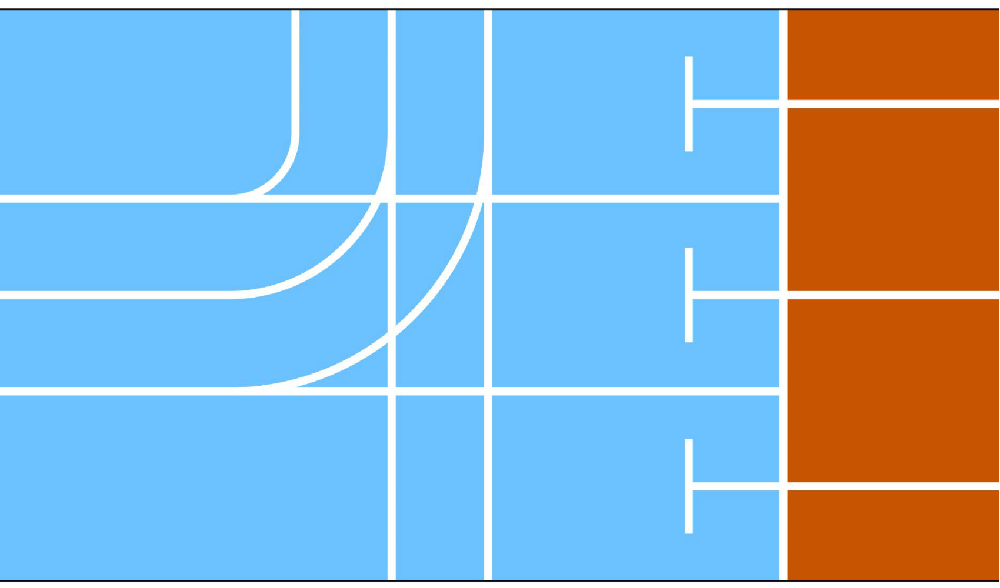

International Standards · ISRM
Edition 2027 · effective 1 January 2027 · current
Retrieved on 26 November 2026 from https://www.wada-ama.org/sites/default/files/2026-11/2027_international_standard_for_results_management_isrm.pdf
Editions: 2027 (current) · 2023 (ABP update) · 2021 (May 2021) · 2021
p. 1
2027 International Standard for Results Management
f

\
p. 2
International Standard for Results Management
The World Anti-Doping Code International Standard for Results Management is a mandatory International Standard developed as part of the World Anti-Doping Program. It was developed in consultation with Signatories, public authorities, and other relevant stakeholders.
The International Standard for Results Management was first adopted in 2019 and came into effect January 2021. It was subsequently amended in May 2021. A revised version was approved by the WADA Executive Committee on 5 December 2025 and is effective as of 1 January 2027.
Published by:
World Anti-Doping Agency Stock Exchange Tower 800 Place Victoria (Suite 1700) PO Box 120 Montreal, Quebec, Canada H3C 0B4
www.wada-ama.org
Tel: +1 514 904 9232
Fax: +1 514 904 8650
E-mail: code@wada-ama.org
p. 3
p. 4
p. 5
PART ONE: INTRODUCTION, CODE PROVISIONS AND INTERPRETATION
1.0 Introduction and Scope
The International Standard for Results Management is a mandatory International Standard developed as part of the World Anti-Doping Program.
The purpose of the International Standard for Results Management is to set out the core responsibilities of Anti-Doping Organizations with respect to Results Management. In addition to describing certain general principles of Results Management (Article 4), this International Standard also sets out the core obligations applicable to the various phases of Results Management from the initial review and notification of potential anti-doping rule violations and/or violation(s) of the prohibition of participation during Ineligibility (Article 5), through Provisional Suspensions (Article 6), the assertion of anti-doping rule violations and/or violation(s) of the prohibition of participation during Ineligibility, and proposal of Consequences (Article 7), the Hearing Process (Article 8) until the issuance and notification of the decision (Article 9) and appeal (Article 10).
Notwithstanding the mandatory nature of this International Standard and the possibility that departures by Anti-Doping Organizations may give rise to compliance consequences under the International Standard for Code Compliance by Signatories, departures from this International Standard shall not invalidate analytical results or other evidence of an anti-doping rule violation and shall not constitute a defense to an anti-doping rule violation, except as expressly provided for under Code Article 3.2.3.
Results Management Authorities are encouraged to consult the Guidelines for the International Standard for Results Management, a non-mandatory document developed by WADA to provide assistance in the form of guidance and recommendations to Results Management Authorities in the implementation of the International Standard for Results Management.
2.0 Code Provisions
The following articles in the Code are directly relevant to the International Standard for Results Management; they can be obtained by referring to the Code itself:
- Code Article 2 Anti-Doping Rule Violations
- Code Article 3 Proof of Doping
- Code Article 5 Testing and Investigations
- Code Article 7 Results Management: Responsibility, Initial Review, Notice and Provisional Suspensions
- Code Article 8 Results Management: Right to a Fair Hearing and Notice of Hearing Decision
- Code Article 9 Automatic Disqualification of Individual Results
- Code Article 10 Sanctions on Individuals
- Code Article 11 Consequences to Teams
- Code Article 13 Results Management: Appeals
p. 6
- Code Article 14 Confidentiality and Reporting
- Code Article 15 Implementation of Decisions
- Code Article 20 Additional Roles and Responsibilities of Signatories and WADA
3.0 Interpretation
The official text of the International Standard for Results Management shall be published in English and French. In the event of any conflict between the English and French versions, the English version shall prevail.
Like the Code, the International Standard for Results Management has been drafted giving consideration to the principles of proportionality, human rights, and other applicable legal principles. It shall be interpreted and applied in that light.
The comments annotating various provisions of the International Standard for Results Management shall be used to guide its interpretation.
Unless otherwise specified, references to Articles or Annexes are references to Articles or Annexes of the International Standard for Results Management.
Where the term "days" is used in the International Standard for Results Management, it shall mean calendar days (i.e., all the days of the week, including any non-working days) unless otherwise specified.
Terms used in this International Standard that are defined terms from the Code are italicized. Terms that are defined in this or another International Standard are underlined.
Defined terms from the Code and International Standards that are used in the International Standard for Results Management are found in Appendix 1.
The Annexes and Appendix to the International Standard for Results Management have the same mandatory status as the rest of the International Standard.
The following terms used in the International Standard for Results Management shall be interpreted as indicated:
- "Shall" to indicate a mandatory requirement.
- "Should" to indicate a recommendation.
p. 7
PART TWO: RESULTS MANAGEMENT - GENERAL PRINCIPLES
4.0 General Principles
4.1 Responsibility for Conducting Results Management
Any matters relating to the authority for conducting Results Management (including the applicable rules) are set out in Code Article 7.1.
[Comment to Article 4.1: As per Code Article 20, an Anti-Doping Organization shall not delegate any aspect of Results Management to a Delegated Third Party where such delegation could reasonably lead to a potential or actual conflict of interest. In addition, a Results Management Authority shall not delegate Results Management to national sports governing body or other national sports organization due to the potential conflict of interest.]
4.2 Confidentiality of Results Management
Save for disclosures, including Public Disclosure, that are required or permitted under Code Article 14 or this International Standard, all processes and procedures related to Results Management are confidential.
[Comment to Article 4.2: Save with the consent of the parties (e.g., the Athlete or other Person and the relevant Anti-Doping Organization) to another case, Athletes or other Persons shall not be allowed to produce documents from the case file of such other case as part of their defense. For the avoidance of doubt, this shall not include decisions that are publicly disclosed or that could be publicly disclosed - i.e., decisions which are not covered by confidentiality clauses - arising from such other case. However, nothing should prevent a Results Management Authority from using any document(s) from a case file for purposes of cooperation with law enforcement agencies, investigation or Results Management of potential violations involving third parties.]
4.3 Timeliness
In the interest of fair and effective sport justice, anti-doping rule violations should be prosecuted in a timely manner. Irrespective of the type of anti-doping rule violation involved, and save for cases involving complex issues or delays not in the control of the Anti-Doping Organization (e.g., delays attributable to the Athlete or other Person), Anti-Doping Organizations should be able to conclude Results Management (including the Hearing Process at first instance) within six (6) months from the notification as per Article 5 below.
[Comment to Article 4.3: The six (6) months' period is a guideline, which may lead to consequences in terms of compliance for the Results Management Authority only in case of severe and/or repeated failure(s).]
p. 8
PART THREE: RESULTS MANAGEMENT - PRE-ADJUDICATION
5.0 First Results Management Phase
This Article 5 sets out the procedures applicable for the first Results Management phase as follows: Adverse Analytical Findings (Article 5.1), Atypical Findings (Article 5.2) and other matters (Article 5.3), which include potential Failures to Comply (Article 5.3.1.1), Whereabouts Failures (Article 5.3.1.2) and Athlete Biological Passport cases (Article 5.3.1.3). The notification requirements in respect of matters falling under the scope of Article 5.3 are described under Article 5.3.2.
[Comment to Article 5: Where the anti-doping rules of a Major Event Organization provide for an expedited resolution of the limited Results Management, the anti-doping rules of the Major Event Organization may provide that there will be only one notification to the Athlete or other Person. The content of the notification letter should reflect the provisions of Article 5 mutatis mutandis.]
5.1 Adverse Analytical Findings
5.1.1 Initial Review
Upon receipt of an Adverse Analytical Finding, the Results Management Authority shall conduct a review to determine whether (a) an applicable TUE has been granted (Article 5.1.1.1), (b) there is any apparent departure from the International Standard for Testing or International Standard for Laboratories that caused the Adverse Analytical Finding (Article 5.1.1.2) and/or (c) it is apparent that the Adverse Analytical Finding was caused by an ingestion of the relevant Prohibited Substance through a permitted route (Article 5.1.1.3).
5.1.1.1 Therapeutic Use Exemption
5.1.1.1.1 The Results Management Authority shall consult the Athlete's records in ADAMS and with other Anti-Doping Organizations that might have approved a TUE for the Athlete (e.g., the National Anti-Doping Organization or the International Federation) to determine whether a TUE exists.
[Comment to Article 5.1.1.1.1: As per the Prohibited List and the Technical Document for Decision Limits for the Confirmatory Quantification of Threshold Substances, the detection in an Athlete's Sample at all times or In-Competition, as applicable, of any quantity of certain Threshold Substances (identified in the Prohibited List), in conjunction with a diuretic or masking agent, shall be considered as an Adverse Analytical Finding unless the Athlete has an approved TUE for that substance in addition to the one granted for the diuretic or masking agent. Therefore, in the event of such detection, the Results Management Authority shall also determine whether the Athlete has an approved TUE for the detected Threshold Substance.]
5.1.1.1.2 If the initial review reveals that the Athlete has an applicable TUE or a TUE for the Prohibited Substance in question has expired or has been withdrawn or reversed in the circumstances described in Article 6.14 p. 9 of the International Standard for Therapeutic Use Exemptions, then the Results Management Authority shall conduct such follow up review as necessary to determine if the specific requirements of the TUE have been complied with.
5.1.1.2 Apparent Departure from International Standard for Testing and/or International Standard for Laboratories
The Results Management Authority shall review the Adverse Analytical Finding to determine if there has been any apparent departure from the International Standard for Testing and/or the International Standard for Laboratories. This may include a review of the Laboratory Documentation Package produced by the Laboratory to support the Adverse Analytical Finding (if available at the time of the review) and relevant Doping Control form(s) and Testing documents.
5.1.1.3 Apparent Ingestion through Permitted Route
If the Adverse Analytical Finding involves a Prohibited Substance permitted through (a) specific route(s) as per the Prohibited List, the Results Management Authority shall consult any relevant available documentation (e.g. Doping Control form) to determine whether the Prohibited Substance appears to have been administered through a permitted route and, if so, shall consult an expert to determine whether the Adverse Analytical Finding is compatible with the apparent route of ingestion.
[Comment to Article 5.1.1.3: For the sake of clarity, the outcome of the initial review shall not prevent an Athlete from arguing that their Use of the Prohibited Substance came from a permitted route at a later stage of Results Management.]
5.1.2 Notification
5.1.2.1 If the initial review conducted as per Article 5.1.1 of the Adverse Analytical Finding does not reveal (i) an applicable TUE, (ii) an apparent departure from the International Standard for Testing or the International Standard for Laboratories that caused the Adverse Analytical Finding or (iii) that it is apparent that the Adverse Analytical Finding was caused by an ingestion of the relevant Prohibited Substance through an authorized route, the Results Management Authority shall promptly notify the Athlete of:
a) The Adverse Analytical Finding;
[Comment to Article 5.1.2.1 (a): In the event that the Adverse Analytical Finding relates to salbutamol, formoterol, human chorionic gonadotrophin or another Prohibited Substance subject to specific Results Management requirements in a Technical Document, the Results Management Authority shall in addition comply with Article 5.1.2.4. The Athlete shall be provided with any relevant documentation, including a copy of the Doping Control form and the Laboratory results.]
p. 10
b) The fact that the Adverse Analytical Finding may result in an anti-doping rule violation of Code Article 2.1 and/or Article 2.2 and the applicable Consequences;
[Comment to Article 5.1.2.1 (b): The Results Management Authority should always refer to both Code Articles 2.1 and 2.2 in the notification and charge letter (Article 7) to an Athlete if the matter relates to an Adverse Analytical Finding.
The Results Management Authority should also always refer to both Code Articles 2.2 and 2.5 in the notification and charge letter (Article 7) to an Athlete if the matter relates to a potential Tampering, or Attempted Tampering, to alter the integrity and validity of Samples collected during Doping Control.
The Results Management Authority shall refer to ADAMS and contact WADA and other relevant Anti-Doping Organizations to determine whether any prior anti-doping rule violation exists and take such information into account in determining the applicable Consequences.]
c) The Athlete's right to request through the Results Management Authority the analysis of the "B" Sample by a reasonable deadline or, failing such request, that the "B" Sample analysis may be deemed irrevocably waived;
[Comment to Article 5.1.2.1 (c): When setting a "reasonable deadline", the Results Management Authority should keep in mind that, per Article 5.3.4.1.4 (b), (ii) of the International Standard for Laboratories: "The responsible RMA should, if possible, inform the Laboratory in writing, within thirty (30) days following the reporting of an "A" Sample AAF by the Laboratory, whether the "B" CP is to be conducted".
The Results Management Authority may still request the "B" Sample analysis even if the Athlete does not request the "B" Sample analysis or expressly or impliedly waives their right to analysis of the "B" Sample. The Results Management Authority may provide in its anti-doping rules that the costs of the "B" Sample analysis shall be covered by the Athlete where the latter has requested such analysis.]
d) The opportunity for the Athlete and/or the Athlete's representative to attend the "B" Sample opening and analysis in accordance with the International Standard for Laboratories;
e) The Athlete's right to request copies of the "A" Sample Laboratory Documentation Package which includes information as required by the International Standard for Laboratories;
[Comment to Article 5.1.2.1 (e): This request shall be made to the Results Management Authority and not the Laboratory directly. For the avoidance of doubt, the Athlete cannot delay a request for "B" Sample analysis where a requested Laboratory Documentation Package has not yet been received.
The Results Management Authority may provide in its anti-doping rules that the costs relating to the issuance of the Laboratory Documentation Package(s) shall be covered by the Athlete.]
f) The opportunity for the Athlete to provide an explanation within a short deadline, and/or to accept the anti-doping rule violation p. 11 and all asserted Consequences and benefit from a twenty-five percent (25%) reduction in the period of Ineligibility under Code Article 10.7.2;
[Comment to Article 5.1.2.1 (f): For the application of Code Article 10.7.2, the twenty-five percent (25%) reduction from the period of Ineligibility asserted in the notice of potential anti-doping rule violation shall be based on the standard period of Ineligibility incurred by the Athlete or other Person and on the evidence available at the time of notification.
Where the asserted period of Ineligibility is more than four (4) years but less than lifetime, the reduction offered under Code Article 10.7.2 shall be one (1) year. Where the asserted period of Ineligibility is lifetime, there shall be no reduction under Code Article 10.7.2.
If circumstances so allow, Aggravating Circumstances may be added to the standard period of Ineligibility.]
g) The opportunity for the Athlete to provide Substantial Assistance as set out under Code Article 10.7.3, to provide other valuable information and assistance as set out under Code Article 10.7.4, or to seek to enter into a case resolution agreement under Code Article 10.8; and
h) The imposition of the mandatory Provisional Suspension per Article 6.1.1.1, or, where a mandatory Provisional Suspension is not applicable, any matters relating to an optional Provisional Suspension as per Article 6.1.2 or, if applicable, the possibility for the Athlete to accept a voluntary Provisional Suspension as per Article 6.2. Where a Provisional Suspension is imposed, the Athlete's attention should be drawn to their right to apply for a lifting of the Provisional Suspension per Article 6.1.3.5.
5.1.2.2 The above notification shall be made within twenty-one (21) days of receipt of the Adverse Analytical Finding from the Laboratory.
[Comment to Article 5.1.2.2: For the avoidance of doubt, a failure to respect this deadline by the Results Management Authority shall not, under any circumstances, invalidate the Adverse Analytical Finding. It should only be addressed by WADA as part of its compliance program.]
5.1.2.3 In cases where the Results Management Authority has been notified of Adverse Analytical Findings for two or more Athletes and it is apparent that these Adverse Analytical Findings resulted from a Contaminated Source, the notification to each Athlete should so state (without providing identity of other Athletes).
[Comment to Article 5.1.2.3: In the event that Atypical Findings are reported (in addition to Adverse Analytical Findings), the Results Management Authority should also mention them in the notification.]
p. 12
5.1.2.4 In the event that the Adverse Analytical Finding relates to the Prohibited Substances set out below, the Results Management Authority shall:
a) Salbutamol or Formoterol: draw the attention of the Athlete in the notification letter that the Athlete may establish, through a controlled pharmacokinetic study, that the Adverse Analytical Finding was the consequence of a Therapeutic dose by inhalation up to the maximum dose indicated under class S3 of the Prohibited List. The Athlete's attention shall in addition be drawn to the key guiding principles for a controlled pharmacokinetic study and, should they wish to conduct such a study, should be provided with the contact details of one or more Laboratories, which could perform the controlled pharmacokinetic study. The Athlete shall be granted a deadline of seven (7) days to indicate whether they intend to undertake a controlled pharmacokinetic study, failing which the Results Management Authority may proceed with the Results Management;
[Comment to Article 5.1.2.4 (a): For the avoidance of doubt, nothing prevents an Athlete from using one or more Laboratories other than those proposed by the Results Management Authority, provided, however, that the said Laboratories can perform the controlled pharmacokinetic study.
Further information on the key guiding principles for a controlled pharmacokinetic study is available in the Guidelines for the International Standard for Results Management and in Annex 2 of the ISTUE Guidelines - Medical Information for TUEs - Asthma.]
b) Urinary human chorionic gonadotrophin: follow the procedures set out in the Technical Document for the Analysis, Reporting & Management of Urinary Human Chorionic Gonadotrophin (hCG) and Luteinizing Hormone (LH) Findings in Male Athletes (ISL TD CG/LH);
c) Other Prohibited Substance subject to specific Results Management requirements in a Technical Document, a Technical Letter or any other document issued by WADA: follow the procedures set out in the relevant Technical Document, Technical Letter or other document issued by WADA.
5.1.2.5 Where it is apparent that the Athlete may be entitled to apply for a retroactive TUE as per Article 4.3 of the International Standard for Therapeutic Use Exemptions, the Results Management Authority should so indicate and draw the Athlete's attention to the relevant provisions in the International Standard for Therapeutic Use Exemptions or other document(s).
[Comment to Article 5.1.2.5: In circumstances where the Adverse Analytical Finding triggers a mandatory Provisional Suspension, the Results Management Authority should conduct the assessment of any application for retroactive TUE without delay.]
p. 13
5.1.2.6 The Results Management Authority shall also indicate the scheduled date, time and place for the "B" Sample analysis for the eventuality that the Athlete or Results Management Authority chooses to request an analysis of the "B" Sample; it shall do so either in the notification letter described in Article 5.1.2.1 or in a subsequent letter promptly after the Athlete (or the Results Management Authority) has requested the "B" Sample analysis.
[Comment to Article 5.1.2.6: As per Article 5.3.4.1.4 (c) (i) of the International Standard for Laboratories, it is recommended that, if requested, the "B" Confirmation Procedure is performed as soon as possible, e.g., within one (1) month of reporting the Adverse Analytical Finding for the "A" Sample.
The timing of the "B" Sample analysis may be strictly fixed within a very short period and without any possible postponement if circumstances justify it. This can notably and without limitation be the case when a postponement of the "B" Sample analysis could significantly increase the risk of Sample degradation and/or inadequately delay the decision-making process in the given circumstances (e.g., and without limitation, during or in view of a Major Event requiring rapid completion of the Sample analysis).]
5.1.2.7 If the Athlete requests the "B" Sample analysis but claims that they and/or their representative is not available on the scheduled date indicated by the Results Management Authority, the Results Management Authority shall liaise with the Laboratory and propose (at least) two (2) alternative dates.
[Comment to Article 5.1.2.7: The alternative dates should take into account: (1) the reasons for the Athlete's unavailability; and (2) the need to avoid any degradation of the Sample and ensure timely Results Management.]
5.1.2.8 If the Athlete and their representative claim not to be available on the alternative dates proposed, or no agreement has been reached on all relevant matters relating to the "B" Sample analysis within twenty (20) days of the date of the Athlete's request for the "B" Sample analysis, the Results Management Authority shall instruct the Laboratory to proceed regardless and appoint an Independent Witness to verify that the "B" Sample container shows no signs of Tampering and that the identifying numbers match that on the collection documentation.
[Comment to Article 5.1.2.8: An Independent Witness may be appointed even if the Athlete has indicated that they will be present and/or represented.]
5.1.2.9 If the results of the "B" Sample analysis confirm the results of the "A" Sample analysis, the Results Management Authority shall promptly notify the Athlete of such results and shall grant the Athlete a short deadline to provide or supplement their explanations. The Athlete shall also be afforded the possibility to accept the anti-doping rule violation and all asserted Consequences to potentially benefit from a reduction in the period of Ineligibility under Code Article 10.7.2, if applicable, and/or to voluntarily accept a Provisional Suspension as per Code Article 7.4.4.
p. 14
[Comment to Article 5.1.2.9: If the results of the "B" Sample analysis do not confirm the "A" Sample analysis, the Results Management Authority shall render a decision not to move forward pursuant to Article 5.4, unless the Results Management Authority decides to continue with a Code Article 2.2 anti-doping rule violation. For the avoidance of doubt, nothing prevents the Results Management Authority from using the "A" Sample analysis results as evidence in the context of another anti-doping rule violation (e.g., a Code Article 2.2 anti-doping rule violation). In such case, the Results Management Authority may also decide to maintain and/or re-impose a Provisional Suspension on the Athlete based on this other potential anti-doping rule violation.]
5.1.2.10 Upon receipt of any explanation from an Athlete, the Results Management Authority may, without limitation, request further information and/or documents from the Athlete within a set deadline or liaise with third parties in order to assess the validity of the explanation.
[Comment to Article 5.1.2.10: If the positive finding involves a Prohibited Substance subject to a permitted route (e.g. by inhalation, by transdermal or by ophthalmic Use) and the Athlete alleged that the positive finding came from the permitted route, the Results Management Authority should assess the credibility of the explanation by contacting third parties (including scientific experts) before deciding not to move forward with Results Management.]
5.1.2.11 Any communication provided to the Athlete under this Article 5.1.2 shall simultaneously be provided by the Results Management Authority to the Athlete's National Anti-Doping Organization(s), International Federation, any other Anti-Doping Organization with a right to appeal under Code Article 13.2.3, and WADA and shall promptly be reported into ADAMS.
[Comment to Article 5.1.2.11: To the extent not already set out in the communication to the Athlete, this notification shall include the following information (if applicable): the Athlete's name, country, sport and discipline within the sport, whether the test was In-Competition or Out-of-Competition, the date of Sample collection, the analytical result reported by the Laboratory and other information as required by the International Standard for Testing.
Nothing prevents a Results Management Authority from setting out in its anti-doping rules that the communication in this Article will also be provided to national governing bodies, such as National Federations or National Olympic Committees, where appropriate.]
5.1.2.12 As an exception to Article 5.1.2.11 and as per Code Article 14.1.1, the Results Management Authority may, upon WADA's written approval which it may grant or deny at its discretion, delay or withhold the notice required by Article 5.1.2.11.
[Comment to Article 5.1.2.12: By way of example, WADA could decide to approve an Anti-Doping Organization's request to delay notice where a highly confidential investigation is ongoing which might implicate a party who would otherwise receive notice of the asserted anti-doping rule violation.]
p. 15
5.2 Atypical Findings
5.2.1 Upon receipt of an Atypical Finding, the Results Management Authority shall conduct a review to determine whether: (a) an applicable TUE has been granted (see Article 5.1.1.1 by analogy); (b) there is any apparent departure from the International Standard for Testing or International Standard for Laboratories that caused the Atypical Finding (see Article 5.1.1.2 by analogy) and/or (c) it is apparent that the ingestion of the Prohibited Substance was through a permitted route (see Article 5.1.1.3 by analogy). If that review does not reveal an applicable TUE, an apparent departure that caused the Atypical Finding or an ingestion through a permitted route, the Results Management Authority shall conduct the required investigative steps.
[Comment to Article 5.2.1 : If the Prohibited Substance involved is subject to specific Results Management requirements in a Technical Document - e.g., ISL TD on CG/LH, ISL TD on potential diuretic contamination cases or ISL TD on potential meat contamination cases - , a Technical Letter - e.g., ISL TL on Growth Promoters (meat contaminants) or ISL TL on Diuretics (contaminants of pharmaceutical products), or any other document issued by WADA, the Results Management Authority shall also follow the procedures set out therein. In addition, the Results Management Authority may contact WADA to determine which investigative steps should be undertaken.]
5.2.2 The Results Management Authority need not provide notice of an Atypical Finding until it has completed the required investigative steps and decided whether it will bring the Atypical Finding forward as an Adverse Analytical Finding unless one of the following circumstances exists:
a) If the Results Management Authority determines that the "B" Sample should be analyzed prior to the conclusion of the required investigative steps, the Results Management Authority may conduct the "B" Sample analysis after notifying the Athlete, with such notice to include a description of the Atypical Finding and the information described in Article 5.1.2.1 (c) to (e) and Article 5.1.2.3;
b) If the Results Management Authority receives a request, either from a Major Event Organization shortly before one of its International Events or from a sport organization responsible for meeting an imminent deadline for selecting team members for an International Event, to disclose whether any Athlete identified on a list provided by the Major Event Organization or sport organization has a pending Atypical Finding, the Results Management Authority shall identify any Athlete after first providing notice of the Atypical Finding to the Athlete; or
c) If the Atypical Finding is, in the opinion of qualified medical or expert personnel, likely to be connected to a serious pathology that requires urgent medical attention.
5.2.3 If after the required investigative steps are completed the Results Management Authority decides to pursue the Atypical Finding as an Adverse Analytical Finding, then the procedure shall follow the provisions of Article 5.0 mutatis mutandis.
p. 16
5.3 Matters not Involving an Adverse Analytical Finding or Atypical Finding
5.3.1 Specific cases
5.3.1.1 Report of a potential Failure to Comply
The pre-adjudication phase of Results Management of a possible Failure to Comply shall take place as provided in Annex A - Review of a Possible Failure to Comply.
5.3.1.2 Whereabouts Failures
The pre-adjudication phase of Results Management of potential Whereabouts Failures shall take place as provided in Annex B - Results Management for Whereabouts Failures.
5.3.1.3 Athlete Biological Passport Cases
The pre-adjudication phase of Results Management of Atypical Passport Findings or Passports submitted to an Expert by the Athlete Passport Management Unit when there is no Atypical Passport Finding shall take place as provided in Annex C - Results Management Requirements and Procedures for the Athlete Biological Passport.
5.3.2 Notification for specific cases and other anti-doping rule violations and/or violations of the prohibition of participation during Ineligibility under Article 5.3
5.3.2.1 At such time as the Results Management Authority considers that the Athlete or other Person may have committed (an) anti-doping rule violation(s) and/or (a) violation(s) of the prohibition of participation during Ineligibility, the Results Management Authority shall promptly notify the Athlete of:
a) The relevant anti-doping rule violation(s) and/or the violation of the prohibition of participation during Ineligibility and the applicable Consequences;
b) The relevant factual circumstances upon which the allegations are based;
c) The relevant evidence in support of those facts that the Results Management Authority considers demonstrate that the Athlete or other Person may have committed (an) anti-doping rule violation(s);
p. 17
e) The opportunity for the Athlete or other Person (i) to provide Substantial Assistance as set out in Code Article 10.7.3, (ii) to provide other valuable information and assistance as set out under Code Article 10.7.4, (iii) to accept the violation and all asserted Consequences and potentially benefit from a reduction in the period of Ineligibility under Code Article 10.7.2, or (iv) to seek to enter into a case resolution agreement in accordance with Code Article 10.8; and
f) Any matters relating to Provisional Suspension (including the possibility for the Athlete or other Person to accept a voluntary Provisional Suspension) as per Article 6 (if applicable). Where a Provisional Suspension is imposed, the Athlete's attention should be drawn to their right to apply for a lifting of the Provisional Suspension per Article 6.1.3.5.
5.3.2.2 Upon receipt of the Athlete's or other Person's explanation, the Results Management Authority may, without limitation, request further information and/or documents from the Athlete or other Person within a set deadline or liaise with third parties in order to assess the validity of the explanation.
5.3.2.3 The communication provided to the Athlete or other Person shall simultaneously be provided by the Results Management Authority to the Athlete's or other Person's National Anti-Doping Organization(s), International Federation and WADA and shall promptly be reported into ADAMS.
[Comment to Article 5.3.2.3: To the extent not already set out in the communication to the Athlete or other Person, this notification shall include the following information (if applicable): the Athlete's or other Person's name, country, sport and discipline within the sport.]
5.3.2.4 As an exception to Article 5.3.2.3 and as per Code Article 14.1.1, the Results Management Authority may, upon WADA's written approval which it may grant or deny at its discretion, delay or withhold the notice required by Article 5.3.2.1.
[Comment to Article 5.3.2.4: By way of example, WADA could decide to approve an Anti-Doping Organization's request to delay notice where a highly confidential investigation is ongoing which might implicate a party who would otherwise receive notice of the asserted anti-doping rule violation.]
p. 18
5.4 Decision Not to Move Forward
If at any point during Results Management up until the charge under Article 7, the Results Management Authority decides not to move forward with a matter, it shall promptly notify the Athlete or other Person (provided that the Athlete or other Person had been already informed of the ongoing Results Management) and simultaneously give notice (with reasons) to the Anti-Doping Organizations with a right of appeal under Code Article 13.2.3.
[Comment to Article 5.4: For the avoidance of doubt, the Results Management Authority shall notify a reasoned decision to all parties with a right of appeal, even where the decision not to move forward is based on a Therapeutic Use Exemption found to be consistent with the Adverse Analytical Finding. The same applies to decisions not to proceed involving an Atypical Finding.
In each of the cases described in Articles 5.1.1 and 5.2, the reasoned decision required by Article 9 may take a simplified form; for further information, please refer to the Guidelines for the International Standard for Results Management, where an ISRM Template - 5.4 Decision is made available to Results Management Authorities.
Where an Athlete or other Person has not been notified of the ongoing Results Management process, the Results Management Authority shall not have the obligation to notify the Athlete or other Person of its decision not to move forward.]
5.5 Cases Subject to Review by Independent Review Expert
5.5.1 Code Article 7.8 applies in rare cases where a Results Management Authority is considering closing a case or not proceeding with normal Results Management processes after it has received notice of an Adverse Analytical Finding(s) and completed the initial review required under Article 5.1.1.
[Comment to Article 5.5.1: As per Comment to Code Article 7.8, for the avoidance of doubt, the Independent Review Expert process is intended to be reserved for exceptional cases where proceeding with the normal Results Management processes would be considered an unjustified and unconscionable result by most stakeholders. One example of such a case would be where an Anti-Doping Organization determines that it is likely that Adverse Analytical Findings for multiple Athletes resulted from a Contaminated Source and that the Athletes have a reasonable likelihood of establishing No Fault or Negligence. For the avoidance of doubt, this Article does not apply to cases concluded by the Anti-Doping Organization in accordance with Code Article 10.8.]
5.5.2 In such cases, the Results Management Authority shall notify the Athlete in accordance with Article 5.1.2, and shall promptly submit its request for an opinion from the Independent Review Expert within the meaning of Code Article 7.8, with a copy of its full file. A copy of the request shall be provided simultaneously to WADA and to each other party entitled to appeal the decision under Code Article 13.
[Comment to Article 5.5.2: As per Comment to Code Article 7.8.1.1, for the avoidance of doubt, the notice shall include the imposition of a mandatory Provisional Suspension where required by Article 7.4.1 or an optional Provisional Suspension if the Results Management Authority determines an optional Provisional Suspension is merited.
Further procedural guidance may be provided by WADA in the Guidelines for the International Standard for Results Management, or on the WADA website.]
p. 19
5.5.3 The request to the Independent Review Expert, as well as the full file, shall be provided to the Independent Review Expert in English. If the full file needs to be translated, this shall not delay the submission of the request under Article 5.5.2. Rather, in such case, the request shall still be submitted promptly, and any additional documents and/or translations shall be provided within three weeks of the submission of the request. If by such deadline translations are missing, the Independent Review Expert shall be entitled to proceed with the translation of such document(s) at the Results Management Authority's expense.
5.5.4 The Results Management Authority shall fully cooperate with the Independent Review Expert, provide documents and/or information as requested by the Independent Review Expert within short notice, and, if so instructed by the Independent Review Expert, undertake specific investigative steps. The Independent Review Expert shall also be entitled to request information deemed necessary from WADA or third parties.
5.5.5 As a general rule, the Independent Review Expert shall issue a written opinion and recommendation based on the case file, with a copy to WADA, advising whether a departure from the normal Results Management process is justified in the particular circumstances of the case within twenty (20) days from receipt of the full (translated) file. To the extent that the underlying Adverse Analytical Finding(s) have triggered (a) Provisional Suspension(s), the process should be expedited to the extent possible.
[Comment to Article 5.5.5: For the avoidance of doubt, the Independent Review Expert issues their opinion or recommendation based on written materials without any oral hearing.]
5.5.6 Upon receipt of the opinion and recommendation of the Independent Review Expert, the Results Management Authority shall issue a written decision on whether it will proceed with normal Results Management, or not to move forward with the Adverse Analytical Finding under Article 5.4. The decision shall be provided to WADA, and the decision along with the Independent Review Expert's opinion and recommendation shall be provided to each other party entitled to appeal the decision as per Code Article 13. The decision is subject to appeal directly to CAS in accordance with the applicable provisions in Code Article 13. If a decision by the Results Management Authority not to move forward with the Adverse Analytical Finding(s) is set aside or reversed on appeal, CAS may maintain jurisdiction to rule on the merits of any alleged anti-doping rule violation related to the Adverse Analytical Finding(s) or may direct the Results Management Authority to proceed with the normal Results Management process.
p. 20
5.5.7 The costs of the Independent Review Expert process shall be covered by the Results Management Authority, which initiated the process. Further, per Code Article 7.8, where the Results Management Authority fails to move forward with the normal Results Management processes without seeking and obtaining an opinion and recommendation from the Independent Review Expert, or fails to move forward with the normal Results Management processes in contravention of the Independent Review Expert's opinion and recommendation, and it is ultimately determined on appeal that an anti-doping rule violation occurred, the Results Management Authority may be subject to non-compliance proceedings under Code Article 24 and the International Standard for Code Compliance by Signatories and shall be required to reimburse the appealing part(y)(ies) for costs and reasonable legal fees incurred in connection with each level of the appellate process.
6.0 Provisional Suspensions
6.1 Imposition of a Provisional Suspension
6.1.1 Mandatory Provisional Suspension
6.1.1.1 As per Code Article 7.4.1, Signatories identified in the provision shall adopt rules providing that when an Adverse Analytical Finding or Adverse Passport Finding (upon completion of the Adverse Passport Finding review process) is received for a Prohibited Substance or a Prohibited Method, other than a Specified Substance, Specified Method or Substance of Abuse, a Provisional Suspension shall be imposed as follows:
a) When an Adverse Analytical Finding is involved, upon sending the notification required by Article 5;
b) When an Adverse Passport Finding is received, upon sending the notification of charge under Article 7 (after completion of the Adverse Passport Finding review process).
[Comment to Article 6.1.1.1: For the avoidance of doubt, nothing prevents the Results Management Authority from imposing an optional Provisional Suspension before the completion of the review process of the Adverse Passport Finding.]
p. 21
6.1.1.2 A mandatory Provisional Suspension may be lifted if it is demonstrated to the Results Management Authority or on appeal that adjudication of the alleged violation is likely to result in a finding of no anti-doping rule violation, No Fault or Negligence under Code Article 10.5, a reprimand with no period of Ineligibility under Code Article 10.6.1.2 (Contaminated Source), or the time already served by the Athlete under the Provisional Suspension would exceed the period of Ineligibility to be imposed for the anti-doping rule violation.
[Comment to Article 6.1.1.2: As used in this Article, "likely" means a well-founded assertion. This standard is somewhat less than balance of probability but substantially more than mere possibility or plausibility; the assertion shall be supported by a good evidentiary foundation, including concrete evidentiary elements.]
6.1.1.3 Each Results Management Authority shall provide in its anti-doping rules that an Athlete upon whom a mandatory Provisional Suspension has been imposed shall, as a prerequisite to an appeal to CAS under Code Article 7.4.3, submit an application to the Results Management Authority to lift the Provisional Suspension. The Results Management Authority's anti-doping rules shall specify the manner in which the application to lift shall be submitted and decided by adopting any one of the following processes:
a) Submitted to and decided solely by the Results Management Authority;
b) Submitted to and decided first by the Results Management Authority and, if the application is denied by the Results Management Authority, by a Code Article 8 hearing panel upon further challenge by the Athlete.
For both options a) and b), decisions on applications to lift shall be made promptly. Where the Results Management Authority's rules provide for option b), and the Results Management Authority denies the Athlete's application to lift, the Athlete shall have the option to appeal the Results Management Authority's decision directly to CAS under Code Article 7.4.3 or to further challenge the mandatory Provisional Suspension by filing an application to lift with the Code Article 8 hearing panel (with the opportunity to file an appeal to CAS under Code Article 7.4.3 if the Code Article 8 hearing panel denies the application).
p. 22
6.1.1.4 As an exception to Article 6.1.1.3, where a Results Management Authority does not possess authority to lift a mandatory Provisional Suspension, the Results Management Authority shall provide in its anti-doping rules that an Athlete upon whom a mandatory Provisional Suspension has been imposed shall, as a prerequisite to an appeal to CAS under Code Article 7.4.3, submit an application to lift the Provisional Suspension to a Code Article 8 hearing panel which shall issue its decision promptly.
[Comment to Article 6.1.1.4: As per Comment to Code Articles 7.4.1.1 and 7.4.1.2, for the avoidance of doubt, the Athlete's challenge of a mandatory Provisional Suspension before a Code Article 8 hearing panel, where contemplated by a Results Management Authority's anti-doping rules, is not considered an "appeal" for purposes of Code Articles 7.4.3 or 13, and any party with the right to appeal a decision to lift a mandatory Provisional Suspension under Code Article 13.2.3 shall not be required to exhaust internal remedies, including without limitation requesting relief from the Code Article 8 hearing panel, before filing an appeal with CAS under Code Article 7.4.3.]
6.1.2 Optional Provisional Suspension
6.1.2.1 As per Code Article 7.4.2, a Signatory may adopt rules, applicable to any Event for which the Signatory is the ruling body or to any team selection process for which the Signatory is responsible or where the Signatory is the applicable International Federation or has Results Management Authority over the alleged anti-doping rule violation or violation of Code Article 10.14.1, permitting Provisional Suspensions to be imposed, prior to analysis of the Athlete's "B" Sample (if applicable) or final hearing as described in Code Article 8, for violations of Code Article 10.14.1 or anti-doping rule violations where a mandatory Provisional Suspension is not required by Code Article 7.4.1.
[Comment to Article 6.1.2.1: Whether or not to impose an optional Provisional Suspension is a matter for the Results Management Authority to decide in its discretion, taking into account all the facts and evidence. The Results Management Authority should keep in mind that if an Athlete continues to compete after being notified and/or charged in respect of an anti-doping rule violation and is subsequently found to have committed an anti-doping rule violation, any results, prizes and titles achieved and awarded in that timeframe may be subject to Disqualification and forfeited.
Nothing in this provision prevents a Results Management Authority from providing grounds for lifting a Provisional Suspension, which may be reviewed by the Results Management Authority or a hearing panel or tribunal in accordance with the applicable anti-doping rules. An optional Provisional Suspension may be imposed as early as with the notification under Article 5.]
p. 23
6.1.2.2 Each Results Management Authority shall provide in its anti-doping rules that an Athlete or other Person upon whom an optional Provisional Suspension has been imposed shall, as a prerequisite to an appeal under Code Article 7.4.3, submit an application to lift the optional Provisional Suspension. The Results Management Authority shall specify the manner in which the application to lift shall be submitted and decided by adopting one of the following processes:
a) Submitted to and decided solely by the Results Management Authority;
b) Submitted to and decided first by the Results Management Authority and, if the application is denied by the Results Management Authority, by a Code Article 8 hearing panel upon further challenge by the Athlete or other Person.
For both options a) and b), decisions on applications to lift shall be made promptly. Where the Results Management Authority's rules provide for option b), and the Results Management Authority denies the Athlete's or other Person's application to lift, the Athlete or other Person shall have the option to appeal the Results Management Authority's decision directly to CAS under Code Article 7.4.3 or to further challenge the optional Provisional Suspension by filing an application to lift with the Code Article 8 hearing panel (with the opportunity to file an appeal to CAS under Code Article 7.4.3 if the Code Article 8 hearing panel denies the application).
6.1.2.3 As an exception to Article 6.1.2.2, where a Results Management Authority does not possess authority to lift an optional Provisional Suspension, the Results Management Authority shall provide in its anti-doping rules that an Athlete or other Person upon whom an optional Provisional Suspension has been imposed shall, as a prerequisite to an appeal to CAS under Code Article 7.4.3, submit an application to lift the Provisional Suspension to a Code Article 8 hearing panel which shall issue its decision promptly.
[Comment to Article 6.1.2.3: As per Comment to Code Article 7.4.2, for the avoidance of doubt, the Athlete's or other Person's further challenge of an optional Provisional Suspension before a Code Article 8 hearing panel, where contemplated by a Results Management Authority's anti-doping rules, is not considered an "appeal" for purposes of Code Articles 7.4.3 or 13, and any party with the right to appeal a decision to lift an optional Provisional Suspension under Code Article 13.2.3 shall not be required to exhaust internal remedies, including without limitation requesting relief from the Code Article 8 hearing panel, before filing an appeal with CAS under Code Article 7.4.3.]
6.1.3 General Provisions
6.1.3.1 In principle, a Provisional Suspension means that an Athlete or other Person is barred temporarily from participating in any capacity in any Competition or activity as per Code Article 10.14.1 prior to p. 24 the final decision on the merits of the Athlete or other Person's matter.
6.1.3.2 A Provisional Suspension shall start on the date on which it is notified (or deemed to be notified) by the Results Management Authority to the Athlete or other Person.
6.1.3.3 The period of Provisional Suspension shall end with the final decision on the merits, unless earlier lifted in accordance with this Article 6.
6.1.3.4 If a Provisional Suspension is imposed based on an "A" Sample Adverse Analytical Finding and a subsequent "B" Sample analysis does not confirm the "A" Sample analysis result, then the Athlete shall not be subject to any further Provisional Suspension on account of a violation of Code Article 2.1.
[Comment to Article 6.1.3.4: In circumstances where the Athlete (or the Athlete's team as may be provided in the rules of the applicable Major Event Organization or International Federation) has been removed from an Event based on a violation of Code Article 2.1 and the subsequent "B" Sample analysis does not confirm the "A" Sample finding, if, without otherwise affecting the Event, it is still possible for the Athlete or team to be reinstated, the Athlete or team may continue to take part in the Event.
The Results Management Authority may nonetheless decide to maintain and/or re-impose a Provisional Suspension on the Athlete based on another anti-doping rule violation notified to the Athlete, e.g. a violation of Code Article 2.2.]
6.1.3.5 Any Athlete or other Person applying for the lifting of a Provisional Suspension shall do so in a timely manner and, in any event, sufficiently in advance of the next Competition or activity which they wish to participate in or attend.
[Comment to Article 6.1.3.5: Failure to do so may result in a decision not being rendered in time and/or may be construed against the Athlete or other Person.]
6.1.3.6 As per Code Article 7.5.2, where a Provisional Suspension imposed by a Major Event Organization remains in place through the end of the Event, the Provisional Suspension shall remain in force beyond the Event but an application to lift the Provisional Suspension may be submitted to, or considered sua sponte by, the hearing panel constituted under the International Federation's anti-doping rules to complete Results Management as described in Code Article 7.1.4.
6.1.4 Appeals to CAS from Provisional Suspension Decisions
6.1.4.1 Per Code Articles 7.4.3 and 13.2, any decision by a Results Management Authority (or Code Article 8 hearing panel) not to impose a Provisional Suspension, or to lift or not lift a Provisional Suspension shall be appealable by any Person with a right of appeal under Code Article 13.2.3 exclusively to the CAS. The proceedings shall be subject to a sole arbitrator, and the language of the proceedings shall be English or French.
p. 25
[Comment to Article 6.1.4.1: The sole arbitrator shall be appointed by the CAS from the CAS list of arbitrators, and not by agreement of the parties to the first instance proceedings.]
6.1.4.2 Upon filing of the appeal, WADA shall receive notice from both the party filing the appeal and CAS.
[Comment to Article 6.1.4.2: As per Code Article 13.2.3.3, notice of the appeal to WADA is a condition to the admissibility of the appeal.]
6.1.4.3 Where the appeal is filed by an Athlete or other Person, WADA shall have a right to file an intervention request within ten (10) days after it has received notification of the answer(s) filed by the respondent Anti-Doping Organization(s).
[Comment to Article 6.1.4.3: It shall be the responsibility of the respondent Anti-Doping Organization(s) to provide a copy of the full procedural file up until the answer(s) to WADA (including all correspondence, submissions and exhibits) within three (3) days of the filing of the (last due) answer. Failure to do so may lead to compliance consequences.
WADA's deadline to intervene shall not start to run until it has been provided with the full CAS record until (all) the answer(s) is/are filed. No further procedural step shall be undertaken until WADA's deadline to intervene has lapsed (or WADA has otherwise confirmed that it does not intend to intervene).
For the avoidance of doubt, this intervention right is without prejudice to WADA's appeal rights and/or right to join an appeal under Code Article 13.2.5 and/or the Code of Sports-related Arbitration.]
6.1.4.4 Any appeal challenging a Provisional Suspension under Code Article 7.4.3 shall not justify any delay in the underlying case on the merits.
[Comment to Article 6.1.4.4: Both the case on the merits and the appeal against the Provisional Suspension decision shall run concurrently and there shall be no suspension of the proceedings on the merits on that basis. The issuance of a decision on the merits shall render the appeal against the Provisional Suspension decision moot.]
6.2 Voluntary Provisional Suspension
6.2.1 As per Code Article 7.4.4, Athletes on their own initiative may voluntarily accept a Provisional Suspension if done so prior to the later of:
(i) the expiration of ten (10) days from the report of the "B" Sample (or (deemed) waiver of the "B" Sample) or ten (10) days from notification of any other anti-doping rule violation within the meaning of Article 5, or
(ii) the date on which the Athlete first competes after such report or notification.
Other Persons on their own initiative may voluntarily accept a Provisional Suspension if done so within ten (10) days from notification of the anti-doping rule violation within the meaning of Article 5.
p. 26
Upon such voluntary acceptance, the Provisional Suspension shall have the full effect and be treated in the same manner as if the Provisional Suspension had been imposed under Article 6.1.1 or 6.1.2; provided, however, at any time after voluntarily accepting a Provisional Suspension, the Athlete or other Person may withdraw such acceptance, in which event the Athlete or other Person shall not receive any credit for time previously served during the Provisional Suspension.
6.3 Notification
6.3.1 Unless already notified under another provision of this International Standard, any imposition of a Provisional Suspension notified to the Athlete or other Person or voluntary acceptance of a Provisional Suspension, or lifting of either, shall promptly be notified by the Results Management Authority to the Athlete's or other Person's National Anti-Doping Organization(s), International Federation and WADA and shall promptly be reported into ADAMS.
[Comment to Article 6.3.1: To the extent not already set out in the communication to the Athlete or other Person, this notification shall include the following information (if applicable): the Athlete's or other Person's name, country, sport, discipline within the sport and the fact that any period of Provisional Suspension effectively served shall be credited against any period of Ineligibility ultimately imposed. Further, when the Provisional Suspension is imposed (and not voluntarily accepted), the attention of the Athlete or other Person should be drawn to their right to apply for a lifting of the Provisional Suspension per Article 6.1.3.5.]
7.0 Charge
7.1 If, after receipt of the Athlete or other Person's explanation or expiry of the deadline to provide such explanation, the Results Management Authority is (still) satisfied that the Athlete or other Person has committed (an) anti-doping rule violation(s) and/or violation(s) of the prohibition of participation during Ineligibility, the Results Management Authority shall promptly charge the Athlete or other Person with the anti-doping rule violation(s) they are asserted to have breached. In this letter of charge, the Results Management Authority:
a) Shall set out the provision(s) of its anti-doping rules asserted to have been violated by the Athlete or other Person;
[Comment to Article 7.1 (a): The Results Management Authority is not limited by the anti-doping rules violation(s) and/or violation(s) of the prohibition of participation during Ineligibility set out in the notification under Article 5. In its discretion, the Results Management Authority may decide to assert further anti-doping rule violation(s) and/or violation(s) of the prohibition of participation during Ineligibility in its notice of charge.
Notwithstanding the above, whereas it is a Results Management Authority's duty to set out all and any asserted anti-doping rule violations against an Athlete or other Person in the notice of charge, a failure to formally charge an Athlete with an anti-doping rule violation that is, in principle, an integral part of a more specific (asserted) anti-doping rule violation (e.g., a Use violation (Code Article 2.2) as part of a Presence violation (Code Article 2.1), or a Possession violation (Code Article 2.6) as part of an asserted Administration violation (Code Article 2.8) shall not prevent a hearing panel from finding that the Athlete or other Person committed a violation of the subsidiary anti-doping rule violation in the event that they are not found to have committed the explicitly asserted anti-doping rule violation.]
p. 27
b) Shall provide a detailed summary of the relevant facts upon which the assertion is based, enclosing any additional underlying evidence not already provided in the notification under Article 5;
[Comment to Article 7.1 (b): The Results Management Authority shall, however, not be prevented from relying on other facts and/or adducing further evidence not contained in either the notification letter under Article 5 or the charge letter under Article 7 during the Hearing Process at first instance and/or on appeal.]
c) Shall indicate the specific Consequences being sought in the event that the asserted anti-doping rule violation(s) and/or violation(s) of the prohibition of participation during Ineligibility is/are upheld and that such Consequences shall have binding effect on all Signatories in all sports and countries as per Code Article 15;
[Comment to Article 7.1 (c): The Consequences of an anti-doping rule violation and/or violation(s) of the prohibition of participation during Ineligibility set out in the letter of charge shall include as a minimum the relevant period of Ineligibility and Disqualification. The Results Management Authority shall refer to ADAMS and contact WADA and other relevant Anti-Doping Organizations to determine whether any prior anti-doping rule violation exists and take such information into account in determining the relevant Consequences.
The proposed Consequences shall in all circumstances be compatible with the provisions of the Code and shall be appropriate based on the explanations given by the Athlete or other Person or the facts as established by the Results Management Authority.
For these purposes, it is expected that the Results Management Authority will review the explanations given by the Athlete or other Person and assess their credibility (for example, by checking the authenticity of documentary evidence and the plausibility of the explanation from a scientific perspective) before proposing any Consequences. If the Results Management phase is substantially delayed by the review, the Results Management Authority shall inform WADA, setting out the reasons for the substantial delay.]
d) Shall grant a deadline of not more than twenty (20) days from receipt of the letter of charge for the Athlete or other Person to either:
i. Accept the anti-doping rule violation(s) and/or violation(s) of the prohibition of participation during Ineligibility asserted and accept the proposed Consequences under Article 7.1 (c). If the acceptance is made in timely fashion, the Athlete or other Person shall be entitled to receive the further reduction in the period of Ineligibility described in Code Article 10.7.2; or
[Comment to Article 7.1 (d) (i): Unlike the general deadline set out in Article 7.1 (d) which can be extended in exceptional circumstances, the deadline of twenty (20) days under Code Article 10.7.2 is not extendable.
The Results Management Authority shall make clear in its letter of charge that the deadline for the Athlete or other Person to avail themselves of Code Article 10.7.2 is not extendable.
For the avoidance of doubt, at this stage, the reduction offered in Code Article 10.7.2 is calculated from the period of Ineligibility asserted in the letter of charge rather than the period of Ineligibility stated in the initial notice of potential violation.]
p. 28
ii. Challenge in writing the Results Management Authority's assertion and/or proposed Consequences, and/or make a written request for a hearing before the relevant hearing panel.
[Comment to Article 7.1 (d) ii: For the avoidance of doubt, nothing prevents an Athlete or other Person from providing, at this stage, (additional) explanations with a view of mitigating the Consequences proposed under Article 7.1 (c).]
e) Shall indicate that if the Athlete or other Person does not challenge the Results Management Authority's assertion of an anti-doping rule violation and/or violation(s) of the prohibition of participation during Ineligibility or proposed Consequences nor request a hearing within the prescribed deadline, the Results Management Authority shall be entitled to deem that the Athlete or other Person has waived their right to a hearing and accepted the violation as well as the Consequences set out by the Results Management Authority in the letter of charge; and
f) Shall set out any matters relating to Provisional Suspension as per Article 6 (if applicable). Where a Provisional Suspension is imposed, the Athlete's or other Person's attention should be drawn to their right to apply for a lifting of the Provisional Suspension per Article 6.1.3.5.
g) Shall remind the Athlete or other Person of the possibility of seeking to enter into a case resolution agreement under Code Article 10.8 and provide Substantial Assistance and/or other valuable information and assistance in the effort to eliminate doping in sport and obtain a suspension of Consequences under Code Articles 10.7.3 or 10.7.4 respectively.
7.2 The notice of charge notified to the Athlete or other Person shall simultaneously be notified by the Results Management Authority to the Athlete's National Anti-Doping Organization(s), International Federation and WADA and shall promptly be reported into ADAMS.
[Comment to Article 7.2: To the extent not already set out in the notice of charge, this notification shall contain the following information (wherever applicable): Athlete's or other Person's name, country, sport and discipline within the sport, and, for a violation of Code Article 2.1, whether the test was In-Competition or Out-of-Competition, the date of Sample collection, the analytical result reported by the Laboratory and other information as required by the International Standard for Testing, and, for any other anti-doping rule violation, the anti-doping rule(s) violated and the basis for the asserted violation(s).]
7.3 In the event that the Athlete or other Person either (i) does not challenge the anti-doping rule violation and/or violation(s) of the prohibition of participation during Ineligibility and accepts the proposed Consequences as per Article 7.1 (d) or (ii) is deemed to have accepted the violation as well as the Consequences as per Article 7.1 (e), the Results Management Authority shall promptly issue the decision and notify it in accordance with Article 9.
p. 29
7.4 If, after the Athlete or other Person has been charged, the Results Management Authority decides to withdraw the charge, it shall notify the Athlete or other Person and give notice (with reasons) to the Anti-Doping Organizations with a right of appeal under Code Article 13.2.3.
7.5 Subject to Article 7.6, in the event that the Athlete or other Person requests a hearing, the matter shall be referred to the Results Management Authority's hearing panel and be dealt with pursuant to Article 8.
[Comment to Article 7.5: Where a Results Management Authority has delegated the adjudication part of Results Management to a Delegated Third Party, the matter shall be referred to the Delegated Third Party.]
7.6 Pursuant to Code Article 8.5, anti-doping rule violations and/or violation(s) of the prohibition of participation during Ineligibility asserted against International-Level Athletes, National-Level Athletes or other Persons may, with the consent of the Athlete or other Person, the Results Management Authority and WADA, be heard in a single hearing directly at CAS under CAS appellate procedures, with no requirement for a prior hearing, or as otherwise agreed by the parties if:
a) the Athlete or other Person and the Results Management Authority agree to proceed with a single hearing before CAS, it shall be the responsibility of the Results Management Authority to liaise in writing with WADA to determine whether it agrees to the proposal;
[Comment to Article 7.6 (a): In the event that all relevant parties agree to refer the case to the CAS as a single instance, the Results Management Authority shall promptly notify any other Anti-Doping Organization with a right of appeal upon initiating the proceedings so that the latter may seek to intervene in the proceedings (if they wish to). The final decision rendered by the CAS shall not be subject to any appeal, save to the Swiss Federal Tribunal.]
b) WADA disagrees (in its entire discretion), then the case shall be heard by the Results Management Authority's hearing panel at first instance.
p. 30
PART FOUR: RESULTS MANAGEMENT - ADJUDICATION
8.0 Hearing Process
8.1 The rules of the Results Management Authority shall confer jurisdiction on hearing panels to hear and determine whether an Athlete or other Person subject to its anti-doping rules has committed an anti-doping rule violation and, if applicable, to impose the relevant Consequences. The Results Management Authority shall bring forward the charge before the hearing panel.
[Comment to Article 8.1: Subject to the provisions of Code Article 20 and the requirements of the Definition of NADO Operational Independence, Results Management Authorities may also delegate the adjudication part of Results Management to Delegated Third Parties.
It is not a Code requirement that a hearing should take place in person. Hearings may also take place remotely by the participants joining together using technology. There are no restrictions as to the technology that can or should be used, but include means such as conference calling, video conferencing technology or other online communication tools. Reasonable adjustments, modifications and/or alterations should be made to accommodate Athletes with impairments.
Unless a hearing has been requested by the Athlete, depending on the circumstances of a case, it may also be fair or necessary - for example, where all the facts are agreed and the only issue is as to the Consequences - to conduct a hearing "in writing", based on written materials without an oral hearing.]
8.2 For the purposes of Article 8.1, a wider pool of hearing panel members shall be established, from which the hearing panels for specific cases shall be nominated. Appointment to the pool shall be made based on anti-doping experience, including legal, sports, medical and/or scientific expertise. All members of the pool shall be appointed for a period of no less than two (2) years (which may be renewable).
[Comment to Article 8.2: The number of potential hearing panel members appointed to the wider pool depends on the number of affiliates and the anti-doping history (including the number of anti-doping rule violations committed in the past years) of the Anti-Doping Organization. At the very least, the number of potential hearing panel members shall be sufficient to ensure that Hearing Processes are timely conducted and provide for replacement possibilities in the event of a conflict of interest.]
8.3 The applicable rules shall provide for an independent person or body to determine in their discretion the size and composition of a particular hearing panel to adjudicate an individual case. At least one appointed hearing panel member shall have a legal background.
[Comment to Article 8.3: For example, the independent person may be a designated chairperson of the pool.
The relevant rules should also provide for a mechanism for the event that the independent person or body has a conflict of interest (e.g., the chairperson may be replaced by a designated vice-chairperson in the event of a conflict of interest, or by the most senior hearing panel member with no conflict of interest, where there is no vice-chairperson or both the chairperson and vice-chairperson are in a situation of conflict).
The size and composition of the hearing panel may vary depending on the nature of the charge and the evidence put forward. However, the hearing panel shall be composed of a single adjudicator or of a panel of three. The chairperson of the pool can be appointed (or appoint themselves if applicable) to sit as single adjudicator or hearing panel member. If a single adjudicator is appointed, they shall have a legal background.]
p. 31
8.4 Upon appointment to a hearing panel, each hearing panel member shall sign a declaration that there are no facts or circumstances known to them which might call into question their impartiality in the eyes of any of the parties, other than any circumstances disclosed in the declaration. If such facts or circumstances arise at a later stage of the Hearing Process, the relevant hearing panel member shall promptly disclose them to the parties.
[Comment to Article 8.4: Any member who is in any way connected with the case and/or the parties - such as family or close personal/professional ties and/or an interest in the outcome of the case and/or having expressed an opinion as to the outcome of the particular case - shall openly disclose on the declaration all circumstances that might interfere with the impartial performance of their functions. By way of example and without limitation, it would in principle be a conflict of interest for board members, staff members, commission members, consultants and officials of a national sport governing body to sit as a panel member on a case involving an Athlete from the same sport and country as the national governing body. It would also be a conflict of interest for a Person involved in the management or operational activities of a government department with responsibility for sport or anti-doping to sit as a panel member in a case involving an athlete from that country.
Without prejudice to the foregoing, to assess whether a hearing panel member is impartial, the Results Management Authority may take into account the principles set out in the IBA Guidelines on Conflicts of Interest in International Arbitration as updated from time to time available at https://www.ibanet.org.]
8.5 The parties shall be notified of the identity of the hearing panel members appointed to hear and determine the matter and be provided with their declaration at the outset of the Hearing Process. The parties shall be informed of their right to challenge the appointment of any hearing panel member if there are grounds for potential conflicts of interest within seven (7) days from the ground for the challenge having become known. Any challenge shall be decided upon by an independent person from the wider pool of hearing panel members or by an independent institution.
[Comment to Article 8.5: For example, the independent person may be a designated chairperson of the pool. The relevant rules should also provide for a mechanism for the event that the independent person is the person subject to the challenge or is one of the other members of that particular hearing panel (e.g. the designated independent person may be replaced in these circumstances by a vice-chairperson or other designated senior hearing panel member).]
8.6 The rules governing the activities of the Results Management Authority shall guarantee the Operational Independence of hearing panel members.
[Comment to Article 8.6: As per the Code definition, Operational Independence means that (1) board members, staff members, commission members, consultants and officials of the Results Management Authority or its affiliates (e.g. member federation or confederation), as well as any person involved in the investigation and pre-adjudication of the matter, cannot be appointed as members and/or clerks (to the extent that such clerk is involved in the deliberation process and/or drafting of any decision) of hearing panels of that Results Management Authority and (2) that hearing panels shall be in a position to conduct the hearing and decision-making process without interference from the Results Management Authority or any third party. The objective is to ensure that members of the hearing panel or individuals otherwise involved in the decision of the hearing panel, are not involved in the investigation of, or decisions to proceed with, the case. In addition, hearings shall not be conducted (whether by delegation or otherwise) by Persons appointed by, or under the authority of, national sports governing bodies or other national sports organizations. Further description of the requirements for service on hearing panels, with examples, may be provided by WADA in the Guidelines for the International Standard for Results Management.]
p. 32
8.7 Anti-Doping Organizations shall provide adequate resources to ensure that hearing panels are able to fulfil their tasks efficiently and independently and otherwise in accordance with this Article 8.
[Comment to Article 8.7: All agreed fees and reasonable expenses of the hearing panels shall be timely paid by the Results Management Authority.]
8.8 The Hearing Process shall respect, at a minimum, all of the following principles:
a) The hearing panel shall remain fair, impartial and Operationally Independent at all times;
b) The Hearing Process shall be accessible and affordable;
[Comment to Article 8.8 (b): Procedural fees, if any, shall be set at a level that does not prevent the accused Person from accessing the hearing. When necessary, the Results Management Authority and/or the relevant hearing panel should consider establishing a legal aid mechanism in order to ensure such access.]
c) The Hearing Process shall be conducted within a reasonable time;
[Comment to Article 8.8 (c): All decisions shall be issued and notified promptly after the final hearing or, if no hearing is requested, after the parties have filed their written submissions. Save in exceptional cases, this timeframe shall not exceed two (2) months. Notwithstanding Code Article 13.3, severe and/or repeated failure(s) to meet this requirement may lead to consequences in terms of compliance for the Results Management Authority.]
d) The right to be informed in a fair and timely manner of the asserted anti-doping rule violation(s), the right to be represented by counsel at the Athlete or other Person's own expense, the right of access to and to present relevant evidence, the right to submit written and oral submissions, the right to call and examine witnesses, and the right to an interpreter at the hearing at the Athlete or other Person's own expense; and
[Comment to Article 8.8 (d): In principle, where a hearing is convened, it should be composed of an opening phase, where the parties are given an opportunity to briefly present their case, an evidentiary phase, where the evidence is assessed and witnesses and experts (if any) are heard, and a closing phase, where all parties are given an opportunity to present their final arguments in light of the evidence.]
e) The right for the Athlete or the other Person to request a public hearing. The Results Management Authority may also request a public hearing provided that the Athlete or the other Person has provided their written consent to the same.
[Comment to Article 8.8 (e): However, the request may be denied by the hearing panel in the interest of morals, public order, national security, where the interests of Minors or the protection of the private life of the parties so require, where publicity would prejudice the interests of justice or where the proceedings are exclusively related to questions of law.]
8.9 As per Code Article 8.2, Hearing Processes held in connection with Events may be conducted by an expedited process as permitted by the rules of the relevant Anti-Doping Organization and the hearing panel.
p. 33
9.0 Decisions
9.1 Content
9.1.1 Results Management decisions or adjudications by Anti-Doping Organizations shall not purport to be limited to a particular geographic area or sport and shall address and determine the following issues:
[Comment to Article 9.1.1: Results Management decisions include Provisional Suspension, save that a Results Management decision on Provisional Suspension shall not be required to determine whether an anti-doping rule violation was committed.
As stated in Comment to Article 5.4, Results Management decisions on matters described in Articles 5.1.1 and 5.2 may take a simplified form. For further information, please refer to the Guidelines for the International Standard for Results Management, where an ISRM Template - 5.4 Decision is made available to Results Management Authorities.]
a) Jurisdictional basis and applicable rules;
b) Detailed factual background;
[Comment to Article 9.1.1 (b): For instance, where the violation is based on an Adverse Analytical Finding, the decision shall set out inter alia the date and place of the Sample Collection Session, the type of Sample collection (blood or urine), whether the control was Out-of-Competition or In-Competition, the Prohibited Substance detected, the WADA-accredited Laboratory that performed the analysis, if the "B" Sample analysis was requested and/or performed as well as the results of the analysis. For any other violation, a full and detailed description of the facts shall be made.]
c) Anti-doping rule violation(s) and/or the violation of the prohibition of participation during Ineligibility committed;
[Comment to Article 9.1.1 (c): Where the violation is based on an Adverse Analytical Finding, the decision shall inter alia set out that there was no departure from the International Standards, or that the alleged departure(s) did or did not cause the Adverse Analytical Finding and demonstrate that the violation of Code Article 2 is made out (see Code Article 2.1.2). For any other violation, the hearing panel shall assess the evidence presented and explain why it considers that the evidence presented by the Results Management Authority meets or does not meet the required standard of proof. In case the hearing panel considers that the anti-doping rule violation(s) is/are established, it shall expressly indicate the anti-doping rule(s) violated.]
d) Applicable Consequences; and
[Comment to Article 9.1.1 (d): The decision shall identify the specific provisions on which the sanction, including any reduction or suspension, is based and provide reasons justifying the imposition of the relevant Consequences. In particular, where the applicable rules grant discretion to the hearing panel (e.g. for Specified Substances or Specified Methods or Contaminated Source under Code Article 10.6.1.1 and 10.6.1.2), the decision shall explain why the period of Ineligibility imposed is appropriate. The decision shall also indicate the start date of the period of Ineligibility (if any) and provide justifications in the event that this date is earlier than the date of the decision (see Code Article 10.13.1). The period of Disqualification shall also be indicated, with justification in the event that certain results are not Disqualified for reasons of fairness (Code Article 10.10), as well as any forfeiture of medals or prizes. The decision shall also mention if (and to what extent) any period of Provisional Suspension is credited against any period of Ineligibility ultimately imposed and set out any other relevant Consequences based on the applicable rules, including Financial Consequences. As per Code Article 7.5.1, Major Event Organizations shall, however, not be required to determine Ineligibility or Financial Consequences beyond the scope of their Event.]
p. 34
[Comment to Article 9.1.1 (e): The decision shall indicate whether the Athlete is an International-Level Athlete for the purposes of the appeal route under Code Article 13. If this information is not available to the hearing panel, the hearing panel shall request the Results Management Authority to liaise with the relevant Anti-Doping Organization (e.g. the International Federation of the Athlete). The decision shall then set out the appropriate appeal route (including the address to which any appeal should be sent to) and the deadline to appeal.]
9.1.2 A Results Management decision or adjudication by a Major Event Organization in connection with one of its Events may be limited in its scope but shall address and determine, at a minimum, the following issues: (i) whether an anti-doping rule violation (and/or a violation of the prohibition of participation during Ineligibility as per Code Article 7.1.4) was committed, the factual basis for such determination, and the specific Code Articles violated, and (ii) applicable Disqualifications under Code Articles 9 and 10.1, with any resulting forfeiture of medals, points and prizes.
[Comment to Article 9.1.2: With the exception of Results Management decisions by Major Event Organizations, each decision by an Anti-Doping Organization should address whether an anti-doping rule violation was committed and all Consequences flowing from the violation, including any Disqualifications other than Disqualification under Code Article 10.1 (which is left to the ruling body for an Event). Pursuant to Code Article 15.1, such decision and its imposition of Consequences shall have automatic effect in every sport in every country. For example, for a determination that an Athlete committed an anti-doping rule violation based on an Adverse Analytical Finding for a Sample taken In-Competition, the Athlete's results obtained in the Competition would be Disqualified under Code Article 9 and all other competitive results obtained by the Athlete from the date the Sample was collected through the duration of the period of Ineligibility are also Disqualified under Code Article 10.10; if the Adverse Analytical Finding resulted from Testing at an Event, it would be the Major Event Organization's responsibility to decide whether the Athlete's other individual results in the Event prior to Sample collection are also Disqualified under Code Article 10.1.]
9.2 Notification
9.2.1 Decisions shall be promptly notified by the Results Management Authority to the Athlete or other Person and simultaneously to other Anti-Doping Organizations with a right of appeal under Code Article 13.2.3 and shall promptly be reported into ADAMS. Where the decision is not in English or French, the Results Management Authority shall provide an English or French summary of the decision and of the supporting reasons as well as a searchable version of the decision.
9.2.2 An Athlete or other Person subject to a period of Ineligibility shall be made aware by the Results Management Authority of their status during Ineligibility, including the Consequences of a violation of the prohibition of participation during Ineligibility, pursuant to Code Article 10.14. The Results Management Authority shall ensure that the period of Ineligibility is duly respected within its sphere of competence. The Athlete or other Person shall also be made aware that they may still provide Substantial Assistance and/or other valuable information and assistance.
p. 35
9.2.3 An Athlete subject to a period of Ineligibility shall also be made aware by the Results Management Authority that they remain subject to Testing during the period of Ineligibility.
9.2.4 Where, further to notification of the decision, an Anti-Doping Organization with a right of appeal requests a copy of the full case file pertaining to the decision, it shall be provided promptly by the Results Management Authority.
[Comment to Article 9.2.4: As set out at Code Article 14.2.2, the case file shall be produced in machine readable form and, to the greatest extend practicable, in electronic, digital, and word-searchable format. If the case file contains documents in a language other than English or French, a case file index shall be provided by the Results Management Authority with a short description of each document in English or French. For purposes of Code Articles 13.2.3.4 (b) and 13.2.3.5 (b), the complete file shall not be considered to have been received by WADA or other parties with a right to appeal until the complete file has been produced in accordance with Code Article 14.2.2.
The case file shall contain all documents relating to the case. For an analytical case, it shall include at a minimum the Doping Control form, Laboratory results and/or Laboratory Documentation Package(s) (if issued), any submissions and exhibits and/or correspondence of the parties and all other documents relied upon by the hearing panel.]
9.2.5 If the decision concerns an Adverse Analytical Finding or Atypical Finding, and after any deadline to appeal has elapsed and no appeal has been filed against the decision, the Results Management Authority shall promptly notify the relevant Laboratory that the matter has been finally disposed of.
10.0 Appeals
10.1 The rules governing appeal rights and avenues are set out at Code Article 13.
10.2 With respect to national appellate instances within the meaning of Code Article 13.2.2:
a) All parties to any national appellate instance shall ensure that WADA and all other parties with a right to appeal have been given timely notice of the appeal;
[Comment to Article 10.2 (a): For instance, this could be achieved by uploading this information into ADAMS.]
b) The appointment of hearing panel members and the Hearing Process on appeal are governed by Article 8 mutatis mutandis. In addition to being fair, impartial and Operationally Independent, a hearing panel on appeal shall also be Institutionally Independent;
[Comment to Article 10.2 (b): For the purposes of this provision, hearing panels on appeal shall be fully Institutionally Independent from the Results Management Authority. They shall therefore not in any way be administered by, connected or subject to the Results Management Authority.]
c) The appeal decision rendered by an appeal body shall comply with the requirements of Article 9.1;
d) The appeal decision shall promptly be notified by the Results Management Authority to the Athlete or other Person and to the other Anti-Doping Organizations that would have been entitled to appeal the prior instance decision under Code Article 13.2.3;
p. 36
e) The further notification requirements at Article 9.2 shall apply mutatis mutandis.
10.3 With respect to appeals before CAS:
a) The appeal procedure shall be governed by Code Article 13 and the Code of Sports-related Arbitration;
[Comment to Article 10.3 (a): As per Code Article 13.1.2, CAS proceedings are de novo. Except as provided in Code Article 13.1.4, in making its decision, CAS shall not give deference to the discretion exercised by the body whose decision is being appealed.
In addition, appeals against Provisional Suspension decisions under Code Article 7.4.3 shall be subject to Article 6.1.4, which shall prevail in case of conflict with this Article 10.3.]
b) Except if agreed otherwise, all appeal proceedings before CAS involving WADA, an International Federation and/or a Major Event Organization as a party shall be conducted in English or French in accordance with Code Article 13.1.2. Such proceedings may only be conducted in a language other than French or English if WADA, the International Federation and/or the Major Event Organization (all) agree with such request at their entire discretion;
c) As per Code Article 13.2.3.3, as a condition to the admissibility of the appeal, an appealing party shall have provided notice of the appeal to WADA and all other parties with a right of appeal;
[Comment to Article 10.3 (c): As per Code article 13.2.5, WADA may elect, at its sole discretion and within its deadline for filing an appeal, or within ten (10) days of being notified of the appeal if later, to join in the appeal as a party in support or opposition to the appeal or cross-appeal. For that purpose, WADA shall be entitled to request the full CAS procedural file (or any element thereof, including any submission/evidence) from the Anti-Doping Organization(s) party to the proceedings. Failure to comply to such request may lead to compliance consequences.]
d) No settlement embodied in an arbitral award rendered by consent of the parties as per Code of Sports-related Arbitration Article R56 shall be entered into by an Anti-Doping Organization without WADA's written approval. Where the parties to the CAS proceedings are envisaging settling the matter by way of a settlement embodied in an arbitral award rendered by consent of the parties, the Anti-Doping Organization that is a party to the proceedings shall immediately notify WADA and provide it with all necessary information in this respect. The same applies to matters settled out-of-court by parties whilst a CAS appeal is pending;
e) Any Anti-Doping Organization that is a party to an appeal before CAS shall promptly provide the CAS award to the other Anti-Doping Organizations that would have been entitled to appeal under Code Article 13.2.3; and
f) The requirements of Article 9 shall apply mutatis mutandis.
11.0 Violation of the Prohibition Against Participation During Provisional Suspension
11.1 In the event that an Athlete or other Person is suspected to have violated the prohibition against participation during Provisional Suspension pursuant to Code Article 10.14, and the suspected violation was discovered during Results Management, the potential violation shall be considered as part of the case. If the violation is confirmed, the Athlete or other Person shall receive no credit for the
p. 37
Provisional Suspension served and the results of such participation shall be Disqualified.
11.2 In the event that the potential violation of the prohibition against participation during Provisional Suspension is discovered after a final decision has been rendered (whether whilst a period of Ineligibility is being served or after), the Results Management relating to the potential violation shall comply with the principles of this International Standard mutatis mutandis.
[Comment to Article 11.2: In particular, the Athlete or other Person shall receive a notification letter in accordance with Article 5.3.2 mutatis mutandis, a letter of charge in accordance with Article 7 mutatis mutandis and be afforded the right to a hearing as per Article 8. The resulting decision shall meet the requirements set for in Article 9 mutatis mutandis, including setting out the resulting Consequences.]
p. 38
ANNEX A: REVIEW OF A POSSIBLE FAILURE TO COMPLY
A.1 Responsibility
A.1.1 The Results Management Authority or Testing Authority (as applicable) is responsible for ensuring that:
a) When the possible Failure to Comply comes to its attention, it shall promptly submit that information to WADA through ADAMS, and instigates review of the possible Failure to Comply based on all relevant information and documentation;
b) The Athlete or other Person is informed of the possible Failure to Comply in writing and has the opportunity to respond in accordance with Article 5.3.2;
c) The review is conducted without unnecessary delay and the evaluation process is documented; and
d) If it decides not to move forward with the matter, its decision is notified in accordance with Article 5.4.
A.1.2 The DCO is responsible for providing a detailed written report of any possible Failure to Comply.
A.2 Requirements
A.2.1 Any potential Failure to Comply shall be reported by the DCO and/or other Person to the Results Management Authority (or Testing Authority as applicable) and/or followed up by the Testing Authority and reported to the Results Management Authority as soon as practicable.
A.2.2 If the Results Management Authority determines that there has been a potential Failure to Comply, the Athlete or other Person shall be promptly notified in accordance with Article 5.3.2 and further Results Management shall be conducted as per Article 5 et seq.
A.2.3 Any additional necessary information about the potential Failure to Comply shall be obtained from all relevant sources (including the Athlete or other Person) as soon as possible and recorded.
A.2.4 The Results Management Authority (and Testing Authority as applicable) shall establish a system for ensuring that the outcomes of its reviews into potential Failures to Comply are considered for Results Management action and, if applicable, for further planning and Target Testing.
p. 39
ANNEX B: RESULTS MANAGEMENT FOR WHEREABOUTS FAILURES
B.1 Determining a Potential Whereabouts Failure
B.1.1 Three (3) Whereabouts Failures by an Athlete within any 12-month period amount to an anti-doping rule violation under Code Article 2.4. The Whereabouts Failures may be any combination of Filing Failures and/or Missed Tests declared in accordance with Article B.3 and adding up to three (3) in total.
[Comment to Article B.1.1: While a single Whereabouts Failure shall not amount to an anti-doping rule violation under Code Article 2.4, depending on the facts, it could amount to an anti-doping rule violation under Code Article 2.3 (Evading Sample Collection) and/or Code Article 2.5 (Tampering or Attempted Tampering with Doping Control).]
B.1.2 The 12-month period referred to in Code Article 2.4 starts to run on the date that an Athlete commits the first Whereabouts Failure being relied upon in support of the allegation of a violation of Code Article 2.4. If two (2) more Whereabouts Failures occur during the ensuing 12-month period, then Code Article 2.4 anti-doping rule violation is committed, irrespective of any Samples successfully collected from the Athlete during that 12-month period. However, if an Athlete who has committed one (1) Whereabouts Failure does not go on to commit a further two (2) Whereabouts Failures within the 12-months, at the end of that 12-month period, the first Whereabouts Failure "expires" for purposes of Code Article 2.4, and a new 12-month period begins to run from the date of their next Whereabouts Failure.
B.1.3 For purposes of determining whether a Whereabouts Failure has occurred within the 12-month period referred to in Code Article 2.4:
a) A Filing Failure shall be deemed to have occurred:
i. Where the Athlete fails to provide complete information in due time in advance of an upcoming quarter, on the 15th day of the month preceding the calendar quarter, alternatively, where the Athlete is included in a RTP during a calendar quarter, on the day by which the information had to be submitted,
ii. Where any information provided by the Athlete (whether in advance of the quarter or by way of update) transpires to be inaccurate, on the (first) date on which such information can be shown to be inaccurate based on the evidence and information available to the Results Management Authority at the time of the discovery, and
iii. Where an Athlete failed to update their information as soon as possible after they became aware of a change in circumstances, on the (first) date of the information which was not updated in time.
[Comment to Article B.1.3 (a): Article B.1.3 (a) (ii) shall not create an obligation on Results Management Authorities to investigate to determine the "first" date on which the Athlete's Whereabouts Information was inaccurate: this determination shall be made solely based on the evidence and information available to the Results Management Authority at the time of the discovery. It shall not be open to Athletes to seek to "backdate" their Filing Failure further based on their own evidence or information.
For purposes of Article B.1.3 (a) (ii), the first date on which the information can be shown to be inaccurate shall relate to the same inaccuracy in the Whereabouts Filing for which the Filing Failure is being pursued. In other words, if the information is inaccurate over a number of consecutive days, the Filing Failure shall be deemed to have occurred on the first date of this sequence (as any accurate information on a given day within the sequence would interrupt it and create a new obligation to update, which may give rise to a separate Filing Failure if the Whereabouts Filing was not updated).]
p. 40
b) A Missed Test shall be deemed to have occurred on the date that the Sample collection was unsuccessfully attempted.
B.1.4 Whereabouts Failures committed by the Athlete prior to retirement as defined in Article 4.10.5.2 (b) of the International Standard for Testing may be combined, for purposes of Code Article 2.4, with Whereabouts Failures committed by the Athlete after the Athlete again becomes available for Out-of-Competition Testing.
[Comment to Article B.1.4: For example, if an Athlete committed two (2) Whereabouts Failures in the six (6) months prior to their retirement, then if they commit another Whereabouts Failure in the first six (6) months in which they are again available for Out-of-Competition Testing, that amounts to a Code Article 2.4 anti-doping rule violation.]
B.2 Requirements for a Potential Filing Failure or Missed Test
B.2.1 An Athlete may only be declared to have committed a Filing Failure where the Results Management Authority establishes each of the following:
a) That the Athlete was duly notified: (i) that they had been designated for inclusion in a Registered Testing Pool; (ii) of the consequent requirement to make Whereabouts Filing; and (iii) of the Consequences of any failure to abide by that requirement;
b) That the Athlete failed to comply with that requirement by the applicable deadline;
[Comment to Article B.2.1 (b): An Athlete fails to comply with the requirement to make Whereabouts Filing (i) where they do not make any such filing, or where they fail to update the filing as required by Article 4.10.6.2 of the International Standard for Testing; or (ii) where they make the filing or update but do not include all of the required information in that filing or update (e.g. they do not include the place where they will be staying overnight for each day in the following quarter, or for each day covered by the update); or (iii) where they include information in the original filing or the update that is inaccurate (e.g., an address that does not exist) or insufficient to enable the Anti-Doping Organization to locate them for Testing (e.g., "running in the Black Forest").]
c) In the case of a second or third Filing Failure, that they were given notice, in accordance with Article B.3.4 (d), of the previous Filing Failure, and (if that Filing Failure revealed deficiencies in the Whereabouts Filing that would lead to further Filing Failures if not rectified) was advised in the notice that in order to avoid a further Filing Failure they shall file the required Whereabouts Filing (or update) by the deadline specified in the notice (which shall be within 48 hours after receipt of the notice) and yet failed to rectify that Filing Failure by the deadline specified in the notice; and
[Comment to Article B.2.1 (c): All that is required is to give the Athlete notice of the first Filing Failure and an opportunity to avoid a subsequent one, before a subsequent Filing Failure may be pursued against them. In particular, it is not necessary to complete the Results Management process with respect to the first Filing Failure before pursuing a second Filing Failure against the Athlete.]
p. 41
d) That the Athlete's failure to file was at least negligent. For these purposes, the Athlete shall be presumed to have committed the failure negligently upon proof of the matters set out at sub-Articles B.2.1 (a) to (c). That presumption may only be rebutted by the Athlete establishing that no negligent behavior on their part caused or contributed to the failure.
B.2.2 While Code Article 5.2 specifies that every Athlete shall submit to Testing at any time and at any place upon request by an Anti-Doping Organization with Testing Authority over them, in addition, an Athlete in a Registered Testing Pool shall specifically be present and available for Testing on any given day during the 60-minute time slot specified for that day in their Whereabouts Filing, at the location that the Athlete has specified for that time slot in such filing. Where this requirement is not met by the Athlete, it shall be pursued as an apparent Missed Test. If the Athlete is tested during such a time slot, the Athlete shall remain with the DCO until the Sample collection has been completed, even if this takes longer than the 60-minute time slot. A failure to do so shall be pursued as an apparent violation of Code Article 2.3 (refusal or failure to submit to Sample collection).
B.2.3 To ensure fairness to the Athlete, where an unsuccessful attempt has been made to test an Athlete during one of the 60-minute time slots specified in their Whereabouts Filing, any subsequent unsuccessful attempt to test that Athlete (by the same or any other Anti-Doping Organization) during one of the 60-minute time slots specified in their Whereabouts Filing may only be counted as a Missed Test (or, if the unsuccessful attempt was because the information filed was insufficient to find the Athlete during the time slot, as a Filing Failure) against that Athlete if that subsequent attempt takes place after the Athlete has received notice, in accordance with Article B.3.2 (d), of the original unsuccessful attempt.
[Comment to Article B.2.3: All that is required is to give the Athlete notice of one Missed Test or Filing Failure before a subsequent Missed Test or Filing Failure may be pursued against them. In particular, it is not necessary to complete the Results Management process with respect to the first Missed Test or Filing Failure before pursuing a second Missed Test or Filing Failure against the Athlete. For the avoidance of doubt, nothing prevents the recording of alternative first, second or third Whereabouts Failures, where notice of the prior (alternative) unsuccessful attempt has not been received.]
B.2.4 An Athlete may only be declared to have committed a Missed Test where the Results Management Authority can establish each of the following:
a) That when the Athlete was given notice that they had been designated for inclusion in a Registered Testing Pool, they were advised that they would be liable for a Missed Test if they were unavailable for Testing during the 60-minute time slot specified in their Whereabouts Filing at the location specified for that time slot;
b) That a DCO attempted to test the Athlete on a given day in the quarter, during the 60-minute time slot specified in the Athlete's Whereabouts Filing for that day, by visiting the location specified for that time slot;
c) That during that specified 60-minute time slot, the DCO did what was reasonable in the circumstances to try to locate the Athlete, short of giving the Athlete any advance notice of the test;
p. 42
[Comment to Article B.2.4 (c): Whether the DCO did what was "reasonable in the circumstances" will depend on the specified location and the information provided by the Athlete. It shall be assessed against the fundamental duty of the Athlete to be available and accessible for Testing without advance notice during the full 60-minute time slot at a specific location per International Standard for Testing Article 4.10.6.2. In essence, an attempt should be considered as meeting this requirement if it would have been sufficient to locate the Athlete had they objectively complied with this duty.
As per Code Article 3.2.3 (iv), if it cannot be established that the DCO did what was reasonable in the circumstances, then the Results Management Authority shall have the burden to establish that such departure did not cause the Missed Test.
Due to the fact that the making of a telephone call is discretionary rather than mandatory, and is left entirely to the absolute discretion of the Testing Authority, whether a telephone call was or was not made is irrelevant to the "reasonableness" of a DCO's attempt, and the lack of a telephone call (even if made mandatory by a Testing Authority) shall not give the Athlete a defense to the assertion of a Missed Test.]
d) That Article B.2.3 does not apply or (if it applies) was complied with; and
e) That the Athlete's non-availability for Testing at the specified location during the specified 60-minute time slot was at least negligent. For these purposes, the Athlete shall be presumed to have been negligent upon proof of the matters set out at sub-Articles B.2.4 (a) to (d). That presumption may only be rebutted by the Athlete establishing that no negligent behavior on their part caused or contributed to their failure (i) to be available and accessible for Testing at such location during such time slot, and (ii) to update their most recent Whereabouts Filing to give notice of a different location where they would instead be available for Testing during a specified 60-minute time slot on the relevant day.
[Comment to Article B.2.4 (e): Negligence means a failure to observe the duty of care expected of a reasonable Athlete similarly situated.]
B.3 Results Management for a Potential Whereabouts Failure
B.3.1 In accordance with Code Article 7.1.6, with respect to a potential Whereabouts Failure, Results Management shall be administered by the Anti-Doping Organization (other than a Major Event Organization) that ordered the test that led to the discovery of the potential Whereabouts Failure; in all other instances, Results Management remains with the Anti-Doping Organization with which the Athlete files their Whereabouts Filings at the time of the potential Whereabouts Failure. As an exception to the foregoing, the Anti-Doping Organization that ordered the test may request that Results Management nevertheless be administered by the Anti-Doping Organization with which the Athlete files their Whereabouts Filings; if the involved Anti-Doping Organization so agrees, Results Management shall be administered by the Anti-Doping Organization with which the Athlete files their Whereabouts Filings.
B.3.2 To the extent there is an issue as to which Anti-Doping Organization has Results Management authority for a potential Whereabouts Failure, the Anti-Doping Organizations involved may resolve the issue between them. In the event that there is an unresolved dispute between Anti-Doping Organizations as to which organization should administer Results Management for a Whereabouts Failure, WADA shall determine that question in its entire discretion. For the avoidance of doubt, Code Article 7.1.1 shall apply by analogy.
p. 43
B.3.3 The Anti-Doping Organization that determines a Filing Failure or a Missed Test shall submit that information to WADA through ADAMS, where it will be made available to other relevant Anti-Doping Organizations.
B.3.4 When a Whereabouts Failure appears to have occurred, Results Management shall proceed as follows:
a) If the apparent Whereabouts Failure has been uncovered by an attempt to test the Athlete, the Testing Authority shall timely obtain an Unsuccessful Attempt Report from the DCO.
b) The Results Management Authority shall timely review the file (including any Unsuccessful Attempt Report filed by the DCO) to determine whether all of the Article B.2.1 requirements (in the case of a Filing Failure) or all of the Article B.2.4 requirements (in the case of a Missed Test) are met. It shall gather information as necessary from third parties (e.g., the DCO whose test attempt uncovered the Filing Failure or triggered the Missed Test) to assist it in this task.
c) If the Results Management Authority concludes that any of the relevant requirements have not been met (so that no Whereabouts Failure should be declared), it shall so advise WADA, the International Federation or National Anti-Doping Organization (as applicable), and the Anti-Doping Organization that uncovered the Whereabouts Failure, giving reasons for its decision. This decision is appealable in accordance with Code Article 13.
d) If the Results Management Authority concludes that all of the relevant requirements as set out in Articles B.2.1 (Filing Failure) and/or B.2.4 (Missed Test) have been met, it should notify the Athlete within fourteen (14) days of the date of the apparent Whereabouts Failure. The notice shall include sufficient details of the apparent Whereabouts Failure to enable the Athlete to respond meaningfully (including the Unsuccessful Attempt Report, if available), and shall give the Athlete a reasonable deadline to respond, advising whether they admit the Whereabouts Failure and, if they do not admit to the Whereabouts Failure, then an explanation as to why not. The notice should also advise the Athlete that three (3) Whereabouts Failures in any 12-month period is a Code Article 2.4 anti-doping rule violation, and should note whether they had any other Whereabouts Failures recorded against them in the previous twelve (12) months. In the case of a Filing Failure, the notice shall also advise the Athlete that in order to avoid a further Filing Failure they shall file the missing whereabouts information by the deadline specified in the notice, which shall be within 48 hours after receipt of the notice.
e) If the Athlete does not respond within the specified deadline, the Results Management Authority shall record the notified Whereabouts Failure against them. This decision shall not be appealable under Code Article 13.
If the Athlete does respond within the deadline, the Results Management Authority shall consider whether their response changes its original decision that all of the requirements for recording a Whereabouts Failure have been met.
i. If so, it shall so advise the Athlete, WADA, the International Federation or National Anti-Doping Organization (as applicable), and the Anti-Doping
p. 44
Organization that uncovered the Whereabouts Failure, giving reasons for its decision. This decision is appealable in accordance with Code Article 13.
ii. If not, it shall so advise the Athlete (with reasons) for its decision and record the Whereabouts Failure against them. This decision shall not be appealable under Code Article 13.
[Comment to Article B.3.4 (e): For the avoidance of doubt, per Article B.3.5, the recording of a Whereabouts Failure shall not be binding in the context of a Code Article 2.4 charge, and all Whereabouts Failures shall be considered on a de novo basis.]
B.3.5 The Results Management Authority shall promptly report a decision to record or not to record a Whereabouts Failure against an Athlete to WADA and all other relevant Anti-Doping Organizations, on a confidential basis, via ADAMS.
[Comment to Article B.3.5: For the avoidance of doubt, the Results Management Authority is entitled to notify other relevant Anti-Doping Organizations (on a strictly confidential basis) of the apparent Whereabouts Failure at an earlier stage of the Results Management process, where it considers it appropriate (for test planning purposes or otherwise). In addition, an Anti-Doping Organization may publish a general statistical report of its activities that discloses in general terms the number of Whereabouts Failures that have been recorded in respect of Athletes under its jurisdiction during a particular period, provided that it does not publish any information that might reveal the identity of the Athletes involved. Prior to any proceedings under Code Article 2.4, an Anti-Doping Organization should not Publicly Disclose that a particular Athlete does (or does not) have any Whereabouts Failures recorded against them (or that a particular sport does, or does not, have Athletes with Whereabouts Failures recorded against them).]
B.3.6 Where three (3) Whereabouts Failures are recorded against an Athlete within any 12-month period, the Results Management Authority shall notify the Athlete and other Anti-Doping Organizations in accordance with Article 5.3.2 alleging violation of Code Article 2.4 and proceed with Results Management in accordance with Article 5 et seq.
If the Results Management Authority fails to bring such proceedings against an Athlete within 30 days of WADA receiving notice of the recording of that Athlete's third Whereabouts Failure in any 12-month period, then the Results Management Authority shall be deemed to have decided that no anti-doping rule violation was committed, for purposes of triggering the appeal rights set out at Code Article 13.2.
For purposes of a Code Article 2.4, the Results Management Authority shall be the Anti-Doping Organization with which the Athlete provides their Whereabouts Filings, unless Results Management is transferred to another Anti-Doping Organization, provided that the transferee also has authority over the Athlete.
[Comment to Article B.3.6: For the avoidance of doubt, nothing prevents the Results Management Authority from asserting additional Whereabouts Failures after the confirmation of a third Whereabouts Failure, including during the Results Management process of a violation of Code Article 2.4. Such additional Whereabouts Failure(s) may be used as an alternative basis for the Code Article 2.4 assertion (provided that all the relevant requirements are met), or as a relevant factor for the assessment of the Athlete's Fault.
Moreover, as the sole purpose of the timeframe is to trigger appeal rights under Code Article 13.2, nothing would prevent an Anti-Doping Organization from bringing a Code Article 2.4 anti-doping rule violation forward even after the 30-day period. For the avoidance of doubt, the appeal rights under Article B.3.6 shall not be subject to the applicable deadline provided in the anti-doping rules of the Results Management Authority, but could be exercised at any time.
If an Anti-Doping Organization that receives an Athlete's Whereabouts Filing removes the Athlete from its Registered Testing Pool after recording one or two Whereabouts Failures against them, then if the Athlete is put in another Anti-Doping Organization's Registered Testing Pool, and that other Anti-Doping Organization starts receiving their Whereabouts Filing, the first Anti-Doping Organization shall provide the second Anti-Doping Organization with full information about the Whereabouts Failure(s) recorded by the first Anti-Doping Organization in the relevant period, so that if further Whereabouts Failure(s) against that Athlete are recorded, it has all the information it needs to bring proceedings against them for a potential violation of Code Article 2.4. For the avoidance of doubt, the first Anti-Doping Organization retains the authority to record (and conduct Results Management of) any Whereabouts Failure committed under its jurisdiction.]
p. 45
B.3.7 An Athlete asserted to have committed a Code Article 2.4 anti-doping rule violation shall have the right to have such assertion determined at a full evidentiary hearing in accordance with Articles 8 and 10 and Code Article 8. The hearing panel shall not be bound by any determination made during the Results Management process, whether as to the adequacy of any explanation offered for a Whereabouts Failure or otherwise. Instead, the burden shall be on the Anti-Doping Organization bringing the proceedings to establish all of the requisite elements of each alleged Whereabouts Failure to the comfortable satisfaction of the hearing panel. If the hearing panel decides that one (or two) Whereabouts Failure(s) have been established to the required standard, but that the other alleged Whereabouts Failure(s) has/have not, then no Code Article 2.4 anti-doping rule violation shall be found to have occurred. However, if the Athlete then commits one (or two, as applicable) further Whereabouts Failure(s) within the relevant 12-month period, new proceedings may be brought based on a combination of the Whereabouts Failure(s) established to the satisfaction of the hearing panel in the previous proceedings (in accordance with Code Article 3.2.3) and the Whereabouts Failure(s) subsequently committed by the Athlete.
[Comment to Article B.3.7: Nothing in Article B.3.7 is intended to prevent the Anti-Doping Organization challenging an argument raised on the Athlete's behalf at the hearing on the basis that it could have been but was not raised at an earlier stage of the Results Management process.]
B.3.8 A finding that an Athlete has committed a Code Article 2.4 anti-doping rule violation has the following Consequences:
a) Imposition of a period of Ineligibility in accordance with Code Article 10.3.2 or Code Article 10.9; and
b) In accordance with Code Article 10.10 Disqualification, unless fairness requires otherwise, of all individual results obtained by the Athlete from the date of the Code Article 2.4 anti-doping rule violation through to the date of commencement of any Provisional Suspension or Ineligibility period, with all of the resulting Consequences, including forfeiture of any medals, points and prizes.
For these purposes, the anti-doping rule violation shall be deemed to have occurred on the date of the third Whereabouts Failure found by the hearing panel to have occurred.
The impact of any Code Article 2.4 anti-doping rule violation by an individual Athlete on the results of any team for which that Athlete has played during the relevant period shall be determined in accordance with Code Article 11.
p. 46
ANNEX C: RESULTS MANAGEMENT REQUIREMENTS AND PROCEDURES FOR THE ATHLETE BIOLOGICAL PASSPORT
C.1 Administrative Management
C.1.1 This Annex describes a step-by-step approach to the review of an Athlete's Passport culminating in the potential assertion of a Use case based on the Passport.
C.1.2 The requirements and procedures described in this Annex apply to all modules of the Athlete Biological Passport except where expressly stated or implied by the context.
C.1.3 These procedures shall be administered and managed by an Athlete Passport Management Unit on behalf of the Passport Custodian. The Athlete Passport Management Unit will initially review profiles to facilitate targeting recommendations for the Passport Custodian when appropriate or refer to the Experts as required. Management and communication of the biological data, Athlete Passport Management Unit reporting and Expert reviews shall be recorded in ADAMS and be shared by the Passport Custodian with other Anti-Doping Organizations with Testing Authority over the Athlete to coordinate further Passport Testing as appropriate. A key element for Athlete Biological Passport management and communication is the Athlete Passport Management Unit Report in ADAMS, which provides an overview of the current status of the Athlete's Passport including the latest targeting recommendations and a summary of the Expert reviews, where available.
C.1.4 The Athlete Passport Management Unit is responsible for liaising with the Experts and for advising the Passport Custodian of the subsequent Expert assessment.
C.2 Initial Review Phase
C.2.1 Review by the Adaptive Model
C.2.1.1 In ADAMS, the Adaptive Model automatically processes data on the biological Markers of the Athlete Biological Passport. These Markers, listed in the applicable Guidelines and/or Technical Documents, include primary Markers that are defined as the most sensitive and specific to doping and secondary Markers that provide supporting evidence of doping in isolation or in combination with other Markers. The Adaptive Model predicts for an individual an expected range within which a series of Marker values falls assuming a normal physiological condition. Outliers correspond to those values outside of the 99%-range, from a lower limit corresponding to the 0.5th percentile to an upper limit corresponding to the 99.5th percentile (1:100 chance or less that this result is due to normal physiological variation). A specificity of 99% is used to identify Atypical Passport Findings.
C.2.1.2 An Atypical Passport Finding is a result generated by the Adaptive Model in ADAMS which identifies a primary Marker(s) value(s) as being outside the Athlete's intra-individual range. An Atypical Passport Finding triggers a mandatory review by an Expert as per Article C.2.2.1. In addition, where a longitudinal profile consisting of (up to) the last five (5) valid primary Marker p. 47 values is identified, assuming a normal physiological condition, as deviating from expected ranges by the Adaptive Model (sequence abnormality), the Passport shall be assessed by the Athlete Passport Management Unit for potential review by an Expert.
C.2.1.3 Departure from WADA Athlete Biological Passport requirements
C.2.1.3.1 If there is a departure from WADA Athlete Biological Passport requirements for Sample collection, transport and analysis, the biological Marker result obtained from this Sample affected by the non-conformity shall not be considered in the Adaptive Model calculations.
C.2.1.3.2 A Marker result which is not affected by the non-conformity can still be considered in the Adaptive Model calculations. In such case, the Athlete Passport Management Unit shall provide the specific explanations supporting the inclusion of the result(s). In all cases, the Sample shall remain recorded in the Athlete's Passport. The Experts may include all results in their review provided that their conclusions may be validly supported when taking into account the effects of the non-conformity.
C.2.2 The Initial Expert Review
C.2.2.1 A Passport generating an Atypical Passport Finding, or for which a review is otherwise justified per Article C.2.2.4 below, shall be promptly sent by the Athlete Passport Management Unit to an Expert for review in ADAMS. This should take place within seven (7) days following the generation of the Atypical Passport Finding in ADAMS. The Expert shall promptly provide their individual comments in ADAMS and this should take place within seven (7) days after receipt of the request or, where applicable, within seven (7) days after receipt of any additional information.
C.2.2.2 If a Passport has been recently reviewed by an Expert and the Passport Custodian is in the process of executing a specific multi-Sample Testing strategy on the Athlete, the Athlete Passport Management Unit may briefly delay the review of a Passport generating an Atypical Passport Finding triggered by one of the Samples collected in this context until completion of the planned series of tests. In such situation, the Athlete Passport Management Unit shall clearly indicate the reason for delaying the review of the Passport in the Athlete Passport Management Unit Report.
C.2.2.3 If the first and unique result in a Passport generates an Atypical Passport Finding by the Adaptive Model, the Athlete Passport Management Unit may recommend the prompt collection of an additional Sample before initiating the initial Expert review once the follow-up Sample is available in ADAMS. In such situation, the Athlete Passport Management Unit shall clearly indicate the reason for delaying the Expert review of the Passport in the Athlete Passport Management Unit Report.
C.2.2.4 Review in the absence of an Atypical Passport Finding
p. 48
C.2.2.4.1 Without prejudice to the provisions of the ISL Technical Document Athlete Passport Management Unit Requirements and Procedures or any other relevant document issued by WADA, a Passport may also be sent for Expert review in the absence of an Atypical Passport Finding where the Passport includes other elements otherwise justifying a review.
These elements may include, without limitation:
a) Data not considered in the Adaptive Model;
b) Any abnormal levels and/or variations of Marker(s), including sequence abnormalities;
c) Signs of hemodilution in the hematological Passport;
d) Marker levels below the corresponding Limit of Quantification of the assay; or
e) Intelligence in relation to the Athlete concerned.
C.2.2.4.2 An Expert review initiated in the above-mentioned situations may result in the same Consequences as an Expert review triggered by an Atypical Passport Finding.
C.2.2.5 The review of the Passport shall be conducted based on the Passport and other relevant information, provided that at this stage the Expert is blinded to the identity of the Athlete. The Expert can request further information, as they deem relevant to their review of the Passport. The Passport Custodian may also share other relevant information with the Expert, either upon the Expert's request or at the Passport Custodian's own initiative. However, any exchange between the Expert and the Passport Custodian can only be directed via the Athlete Passport Management Unit and shall not delay the prompt issuance of the Expert's comments.
[Comment to Article C.2.2.5: For example, the Expert may request, and/or the Passport Custodian may provide on its own initiative, further information relevant to the Experts evaluation of the Passport (which may be either potentially inculpatory or exculpatory), including, without limitation, information related to Sample analysis (e.g., by requesting a Laboratory Documentation Package), Competition schedule, training information, information recorded in the Blood Collection Supplementary Form as per the IST Guidelines - Operating an Athlete Biological Passport, medications and/or supplements declared pursuant to Article 7.4.5 of the International Standard for Testing, pathophysiological information, relevant analytical findings and/or other relevant information and/or intelligence. The Passport Custodian may decide to investigate and request further information from the Athlete in writing or via interview to provide to the Expert. The information provided by the Passport Custodian will be shared with the Expert by the Athlete Passport Management Unit, which shall decide in what form the information will be provided to the Expert.]
C.2.2.6 Expert Evaluation
C.2.2.6.1 When evaluating a Passport, an Expert assesses the likelihood that the Passport is the result of the Use of a Prohibited Substance or Prohibited Method and the likelihood that the
p. 49
Passport is the result of a normal physiological or pathological condition in order to provide one of the following opinions: "Normal", "Suspicious", "Likely doping" or "Likely medical condition". For a "Likely doping" opinion, the Expert may conclude, at a minimum, that (i) a Passport is highly likely the result of the Use of a Prohibited Substance or Prohibited Method and unlikely the result of a normal physiological or pathological condition or (ii) a Passport is likely the result of the Use of a Prohibited Substance or Prohibited Method and highly unlikely the result of a normal physiological or pathological condition.
[Comment to Article C.2.2.6.1: When evaluating competing propositions, the likelihood of each proposition is independently evaluated by the Expert based on the evidence available for that proposition at the time of the review. It is acknowledged that it is the relative likelihoods (i.e., likelihood ratio) of the competing propositions that ultimately determine the Expert's opinion. It is also commonly known that Erythropoietin Receptor Agonists (ERAs) and other blood doping methods are Used Out-of-Competition for training purposes, and that doping is not always logical. For that reason, an Expert should refrain, at any stage of the review process, from making assumptions as to the specifics of a doping scenario and shall not need to be satisfied of a specific doping scenario for a conclusion of "likely doping".]
C.2.2.6.2 To reach a conclusion of "Likely doping" in the absence of an Atypical Passport Finding, the Expert shall come to the opinion that it is highly likely that the Passport is the result of the Use of a Prohibited Substance or Prohibited Method and that it is highly unlikely that the Passport is the result of a normal physiological or pathological condition.
C.2.2.6.3 The comments made on a Passport by an Expert as part of the initial review per Articles C.2.2 and/or C.3 shall not be disclosed or disclosable in the context of legal proceedings under any circumstances.
[Comment to Article C.2.2.6.3: The comments made by Experts at this stage are meant as guidance for the Passport Custodian and the Athlete Passport Management Unit as to potential next steps and are therefore informal in nature and often based on an incomplete set of information. The review of the Expert(s) is formalised in the joint Expert report under Article C.4. For the avoidance of doubt, this provision covers comments made by an Expert in any format (including in ADAMS, in emails, notes of meetings, etc.]
p. 50
C.2.3 Consequences of the Initial Review
Depending on the outcome of the initial review, the Athlete Passport Management Unit shall take the following action:
| Expert Evaluation | Athlete Passport Management Unit Action |
|---|---|
| "Normal" | Continue normal Testing plan. |
| "Suspicious" | Provide recommendations to the Passport Custodian for Target Testing, Sample analysis and/or requesting further information as required. |
| "Likely doping" | Send to two (2) additional Experts, as per Article C.3. |
| "Likely medical condition" | If recommended by the Expert, inform the Athlete as soon as possible via the Passport Custodian (or send to other Experts). |
[Comment to Article C.2.3: The Athlete Biological Passport is a tool to detect the possible Use of Prohibited Substance(s) or Prohibited Method(s) and it is not intended as a health check or for medical monitoring. It is important that the Passport Custodian educate Athletes to ensure that they undergo regular health monitoring and not rely on the Athlete Biological Passport for this purpose. Nevertheless, the Passport Custodian should inform the Athlete in case the Passport indicates a likely pathology as determined by the Experts.]
C.3 Review by Two (2) Additional Experts
C.3.1 In the event that the opinion of the appointed Expert in the initial review, pending other explanation to be provided at a later stage, is that of "Likely doping", the Passport shall then be promptly sent by the Athlete Passport Management Unit to two (2) additional Experts for review. This should take place within seven (7) days after the reporting of the initial review. The review by the two (2) additional Experts shall be conducted without knowledge of the initial review and shall follow the same procedure, where applicable, as presented in Article C.2.2. The Athlete Passport Management Unit shall provide the two (2) additional Experts with all information that was provided to the first Expert for the initial review, including all information that was shared by the Passport Custodian pursuant to Article C.2.2.5. The two (2) additional Experts can also request further information as they deem relevant to their review of the Passport. The Passport Custodian may also share any relevant information with the two (2) additional Experts, either upon the Expert's request or at the Passport Custodian's own initiative. However, any exchange between the two (2) additional Experts and the Passport Custodian can only be directed via the Athlete Passport Management Unit and shall not delay the prompt issuance of the two (2) additional Expert's comments. The two (2) additional Experts shall each promptly provide their individual comments in ADAMS. This should take place within seven (7) days after receipt of the request or, where applicable, within seven (7) days after receipt of any additional information.
p. 51
C.3.2 A unanimous opinion among the three (3) Experts is necessary in order to proceed further towards declaring an Adverse Passport Finding, which means that all three (3) Experts render an opinion of "Likely doping". The conclusion of the Experts shall be reached with the three (3) Experts assessing the Athlete's Passport with the same data.
[Comment to Article C.3.2: The three (3) Expert opinions cannot be accumulated over time based on different data and/or information. For example, if the Athlete has been tested since the first Expert opinion, the Passport shall be sent again to the first Expert.]
C.3.3 In the case when two (2) of the three (3) Experts evaluate the Passport as "Likely doping", the Athlete Passport Management Unit shall promptly confer with the Experts. The group can also seek advice from an appropriate outside Expert, although this shall be done while maintaining strict confidentiality of the Athlete's Personal Information. Per the procedure set out in Articles C.2.2.5 and C.3.2, the Experts can also request further information, as they deem relevant to their review of the Passport, from the Passport Custodian. The Passport Custodian may also share any relevant information with the Experts at the Passport Custodian's own initiative.
C.3.4 If no unanimity can be reached among the three (3) Experts, the Expert panel shall update their respective comments in ADAMS. The Athlete Passport Management Unit shall update the Athlete Passport Management Unit Report accordingly and recommend that the Passport Custodian pursue additional Testing and/or gather intelligence on the Athlete (refer to ISII Guidelines - Information Gathering and Intelligence Sharing), as appropriate.
[Comment to Article C.3.4: In situations where no unanimity can be reached, but a strong suspicion of doping remains, the Passport Custodian may still use the evidence from the Passport in combination with other evidence in order to establish a Use case according to Code Article 2.2.]
C.4 Conference Call, Compilation of the Athlete Biological Passport Documentation Package and Joint Expert Report
C.4.1 If a unanimous opinion of "Likely doping" is rendered by all three (3) Experts, the Athlete Passport Management Unit shall promptly declare a "Unanimous likely doping" evaluation in the Athlete Passport Management Unit Report in ADAMS. The three (3) Experts shall constitute the Expert panel. The Athlete Passport Management Unit should promptly organize a conference call with the Expert panel to initiate the next steps for the case, including proceeding with the compilation of the Athlete Biological Passport Documentation Package (see ISL Technical Document - Athlete Passport Management Unit Requirements and Procedures) and drafting of the joint Expert report. In preparation for this conference call, the Athlete Passport Management Unit shall compile all information that was shared with the Experts for the purpose of their individual reviews of the Passport (including information shared by the Passport Custodian on request from an Expert(s) or on its own initiative) and should coordinate with the Passport Custodian to compile any other relevant information to share with the Expert panel.
C.4.2 At this stage, the identity of the Athlete is not mentioned but it is accepted that specific information provided may allow to identify the Athlete. This shall not affect the validity of the process.
p. 52
C.4.3 Once completed, the Athlete Biological Passport Documentation Package shall be sent by the Athlete Passport Management Unit to the Expert panel, who shall review it and provide a joint Expert report to be signed by all three (3) Experts. The conclusion within the joint Expert report shall be reached without interference from the Passport Custodian. If necessary, the Expert panel may request complementary information from the Athlete Passport Management Unit.
[Comment to Article C.4.3: The joint Expert report should be issued by the Expert panel within a period of one (1) month from receipt of the Athlete Biological Passport Documentation Package. To the extent more time is needed, the Expert panel shall promptly inform the Athlete Passport Management Unit.]
C.4.4 If after this stage of the review, including review of the Athlete Biological Passport Documentation Package, the Expert panel is no longer unanimous in their opinion of "Likely doping", the Expert panel shall update their respective comments in ADAMS and the Athlete Passport Management Unit shall update the Athlete Passport Management Unit Report accordingly and recommend that the Passport Custodian pursue additional Testing and/or gather intelligence on the Athlete (refer to ISII Guidelines - Information Gathering and Intelligence Sharing), as appropriate.
C.5 Issuing an Adverse Passport Finding
C.5.1 If the Expert panel confirms their unanimous position of "Likely doping", the Athlete Passport Management Unit shall promptly declare an Adverse Passport Finding in ADAMS that includes a written statement of the Adverse Passport Finding, the Athlete Biological Passport Documentation Package and the joint Expert report. The Athlete Passport Management Unit shall also share these documents with WADA through ADAMS or any other secure platform.
C.5.2 After reviewing the Athlete Biological Passport Documentation Package and joint Expert report, the Passport Custodian shall:
a) Notify the Athlete of the Adverse Passport Finding in accordance with Article 5.3.2;
[Comment to Article C.5.2.(a): As per Comment to Code Article 7.4.1, nothing prevents the Results Management Authority from imposing an optional Provisional Suspension before the completion of the review process of the Adverse Passport Finding.]
b) Provide the Athlete the Athlete Biological Passport Documentation Package and the joint Expert report;
c) Invite the Athlete to provide their own explanation, in a timely manner, of the data provided to the Passport Custodian.
C.6 Review of Explanation from Athlete and Disciplinary Proceedings
C.6.1 The Passport Custodian shall send the Athlete's explanation and supporting information to the Athlete Passport Management Unit (which may occur after the Passport Custodian has further investigated and/or sought additional information from the Athlete about the explanation). The Athlete Passport Management Unit shall forward it to the Expert panel for review with any additional information necessary for the Expert panel to render its opinion having consulted with the Passport Custodian.
p. 53
The Athlete Passport Management Unit shall promptly update their recommendation in ADAMS as "Athlete's explanation provided to Expert panel", At this stage, the Athlete's identity is likely known, although it shall not affect the validity of the process. The Expert panel shall promptly reassess the Passport and reach one of the following conclusions:
[Comment to Article C.6.1: Such a reassessment shall also take place when the Athlete does not provide any explanation.]
a) Unanimous opinion of "Likely doping" by the Experts based on the information in the Passport and any explanation provided by the Athlete; or
b) Based on the available information, the Experts are unable to reach a unanimous opinion of "Likely doping" set forth above.
C.6.2 If the Expert panel expresses the opinion set forth in Article C.6.1(a), then the Athlete Passport Management Unit shall promptly update their recommendation in ADAMS as "APF confirmed" and inform the Passport Custodian, who shall charge the Athlete in accordance with Article 7 above and continue with Results Management in accordance with this International Standard.
[Comment to Article C.6.2: At this stage, the Results Management Authority shall provide, in its letter of charge, that the Athlete is subject to a mandatory Provisional Suspension in accordance with Article 6.1.1.1.]
C.6.3 If the Expert panel expresses the opinion set forth in Article C.6.1(b), the Expert panel shall promptly update their respective comments in ADAMS and the Athlete Passport Management Unit shall update the Athlete Passport Management Unit Report, accordingly, and recommend the Passport Custodian to pursue additional Testing and/or gather intelligence on the Athlete (refer to ISII Guidelines - Information Gathering and Intelligence Sharing), as appropriate. The Passport Custodian shall notify the Athlete and WADA of the outcome of the review. Without prejudice to any potential proceedings under Code Article 2.5, the Passport Custodian shall be entitled to reinitiate Results Management if any explanations and/or evidence provided by the Athlete transpire to be untrue and/or forged.
[Comment to Article C.6.3: Where a matter is concluded as per Article C.6.3, any further review of the Athlete's Passport should be conducted by an Expert who was not amongst the first Expert panel.]
C.7 Passport Re-setting
C.7.1 In the event the Athlete has been found to have committed an anti-doping rule violation based on the Passport, the Athlete's Passport shall be reset by the Passport Custodian at the start of the relevant period of Ineligibility and a new Biological Passport ID shall be assigned in ADAMS. This maintains the Athlete's anonymity for potential Athlete Passport Management Unit and Expert panel reviews conducted in the future. The old Passport data remains visible to the Passport Custodian.
C.7.2 Where an Athlete has been acquitted in a final decision or has had the charge against them withdrawn after the Athlete has been charged under Article 7, the Passport shall be reset and a new Biological Passport ID shall be allocated in ADAMS. Should this new Passport be reviewed again as "Unanimous likely doping" (and at that point only), p. 54 it shall be the responsibility of the Passport Custodian to inform the Athlete Passport Management Unit of the previous Passport and to provide all relevant information. The previous Passport data shall be provided by the Athlete Passport Management Unit to the Expert panel in case of "Unanimous likely doping" conclusion (and at that point only).
C.7.3 When an Athlete is found to have committed an anti-doping rule violation on any basis other than the Athlete Biological Passport, the Passport shall remain in effect, except in those cases where the Prohibited Substance or Prohibited Method has the potential to alter the Passport Markers (e.g., for an AAF reported for anabolic androgenic steroids, which may affect the Markers of the steroid profile, or for the presence or Use of ERAs or blood transfusions, which may alter the hematological Markers). The Passport Custodian shall consult with their Athlete Passport Management Unit following an Adverse Analytical Finding to determine whether a Passport reset is warranted. In such instances, the Athlete's Passport would be reset at the start of the relevant period of Ineligibility.
[Comment to C.7.3: For the avoidance of doubt, the impact of the Prohibited Substance or Prohibited Method need not be clearly visible in the Passport in order to justify a reset. It is sufficient only for the Prohibited Substance or Prohibited Method to have the potential to impact Passport Markers, as determined by the Athlete Passport Management Unit in consultation with relevant Experts as required.]
C.8 Investigation or Inquiry by the Passport Custodian
C.8.1 At any stage following a review of the Passport by an Expert or Expert panel, the Passport Custodian may submit a request to the Athlete Passport Management Unit, for the Expert or Expert panel to promptly provide further explanation in relation to their evaluation of a Passport, including setting out the specific facts and assumptions that they have relied upon in their evaluation to reach their conclusion. The Athlete Passport Management Unit and the Passport Custodian shall jointly determine how the further explanation of the Expert or Expert panel shall be provided (e.g., in writing or via a conference call between the Passport Custodian, the Athlete Passport Management Unit and the Expert or Expert panel). If the explanation is to be provided in writing, then the Expert or Expert panel shall provide the explanation to the Athlete Passport Management Unit which shall forward the explanation in turn to the Passport Custodian.
C.8.2 Notwithstanding any other provision of this Annex C, at any stage of the review of the Passport, the Passport Custodian may conduct any investigation or inquiry related to the Passport for the purpose of providing additional relevant explanation to the Expert or Expert panel in accordance with the provisions of this Annex C and/or for the purpose of pursuing a Use case under Code Article 2.2.
[Comment to Article C.8.2: For the avoidance of doubt, nothing in this Annex C shall prevent the Passport Custodian from using the evidence from the Passport in combination with other evidence to establish a Use case according to Code Article 2.2.]
p. 55
APPENDIX 1: DEFINITIONS
I. Defined Terms from the Code that are used in the International Standard for Results Management
ADAMS: The Anti-Doping Administration and Management System is a Web-based database management tool for data entry, storage, sharing, and reporting designed to assist stakeholders and WADA in their anti-doping operations in conjunction with data protection legislation.
Administration: Providing, supplying, supervising, facilitating, or otherwise participating in the Use or Attempted Use by another Person of a Prohibited Substance or Prohibited Method. However, this definition shall not include the actions of bona fide medical personnel involving a Prohibited Substance or Prohibited Method Used for genuine and legal therapeutic purposes or other acceptable justification and shall not include actions involving Prohibited Substances which are not prohibited in Out-of-Competition Testing unless the circumstances as a whole demonstrate that such Prohibited Substances are not intended for genuine and legal therapeutic purposes or are intended to enhance sport performance.
Adverse Analytical Finding: A report from a WADA-accredited laboratory or other WADA-approved laboratory that, consistent with the International Standard for Laboratories, establishes in a Sample the presence of a Prohibited Substance or its Metabolites or Markers or evidence of the Use of a Prohibited Method.
Adverse Passport Finding: A report identified as an Adverse Passport Finding as described in the applicable International Standards.
Anti-Doping Organization: WADA or a Signatory that is responsible for adopting rules for initiating, implementing or enforcing any part of the Doping Control process. This includes, for example, the International Olympic Committee, the International Paralympic Committee, other Major Event Organizations that conduct Testing at their Events, International Federations, and National Anti-Doping Organizations.
Athlete: Any Person who competes in sport at the international level (as defined by each International Federation) or the national level (as defined by each National Anti-Doping Organization). An Anti-Doping Organization has discretion to apply anti-doping rules to an Athlete who is neither an International-Level Athlete nor a National-Level Athlete, and thus to bring them within the definition of "Athlete". In relation to Athletes who are neither International-Level nor National-Level Athletes, an Anti-Doping Organization may elect to: conduct limited Testing or no Testing at all; analyze Samples for less than the full menu of Prohibited Substances; require limited or no whereabouts information; or not require advance Therapeutic Use Exemptions. However, if an Article 2.1, 2.3 or 2.5 anti-doping rule violation is committed by any Athlete over whom an Anti-Doping Organization has elected to exercise its authority to test and who competes below the international or national level, then the Consequences set forth in the Code shall be applied. For purposes of Article 2.8 and Article 2.9 and for purposes of anti-doping information and Education, any Person who participates in sport under the authority of any Signatory, government, or other sports organization accepting the Code is an Athlete.
[Comment to Athlete: For the avoidance of doubt, an Anti-Doping Organization may not adopt rules for such Athletes (including with respect to Therapeutic Use Exemptions), except with respect to the matters explicitly referenced above or as expressly allowed by an International Standard.
Individuals who participate in sport may fall in one of five categories: 1) International-Level Athlete, 2) National-Level Athlete, 3) individuals who are not International or National-Level Athletes but over whom the International Federation or National Anti-Doping Organization has chosen to exercise authority, 4) Recreational Athlete, and 5) individuals over whom no International Federation or National Anti-Doping Organization has, or has chosen to, exercise authority. All International and National-Level Athletes are subject to the anti-doping rules of the Code, with the precise definitions of international and national level sport to be set forth in the anti-doping rules of the International Federations and National Anti-Doping Organizations.]
p. 56
Athlete Biological Passport: The program and methods of gathering and collating data as described in the International Standard for Testing and International Standard for Laboratories.
Attempt: Purposely engaging in conduct that constitutes a substantial step in a course of conduct planned to culminate in the commission of an anti-doping rule violation. Provided, however, there shall be no anti-doping rule violation based solely on an Attempt to commit a violation if the Person renounces the Attempt prior to it being discovered by a third party not involved in the Attempt.
Atypical Finding: A report from a WADA-accredited laboratory or other WADA-approved laboratory which requires further investigation as provided by the applicable International Standards (including related Technical Documents or Technical Letters), or as directed by WADA, prior to the final determination about the finding (i.e., the establishing, or not, of an anti-doping rule violation).
Atypical Passport Finding: A report described as an Atypical Passport Finding as described in the applicable International Standards.
CAS: The Court of Arbitration for Sport.
Code: The World Anti-Doping Code.
Competition: A single race, match, game or singular sport contest. For example, a basketball game or the finals of the Olympic 100-meter race in athletics. For stage races and other sport contests where prizes are awarded on a daily or other interim basis the distinction between a Competition and an Event will be as provided in the rules of the applicable International Federation.
Consequences of Anti-Doping Rule Violations ("Consequences"): An Athlete's or other Person's violation of an anti-doping rule may result in one or more of the following: (a) Disqualification means the Athlete's results in a particular Competition or Event are invalidated, with all resulting Consequences including forfeiture of any medals, points and prizes; (b) Ineligibility means the Athlete or other Person is barred on account of an anti-doping rule violation for a specified period of time from participating in any Competition or other activity or funding as provided in Article 10.14; (c) Provisional Suspension means the Athlete or other Person is barred temporarily from participating in any Competition or activity prior to the final decision at a hearing conducted under Article 8; (d) Financial Consequences means a financial sanction imposed for an anti-doping rule violation or to recover costs associated with an anti-doping rule violation; and (e) Public Disclosure means the dissemination or distribution of information to the general public or Persons beyond those Persons entitled to earlier notification in accordance with Article 14. Teams in Team Sports may also be subject to Consequences as provided in Article 11.
p. 57
Contaminated Source: An unforeseeable source of a Prohibited Substance, such as: using or taking a medication or supplement that contains a Prohibited Substance that is not disclosed on the product label or in information accessible by a reasonable artificial intelligence or comparable search; consumption of a food or drink, such as contaminated meat or liquid, that contains a Prohibited Substance with no advance warning, disclosure or other basis to suspect that it may contain a Prohibited Substance; exposure to a Prohibited Substance through the Athlete's direct physical contact with a third person or physical contact with objects touched or handled by the third person.
Decision Limit: The value above which a quantitative analytical result for a Threshold Substance in a Sample shall be reported as an Adverse Analytical Finding.
[Comment to Decision Limit: For more information on Decision Limits and which Threshold Substances they are applied for, refer to the ISL TD DL and other applicable Technical Documents (e.g., ISL TD GH, ISL TD CG/LH).]
Delegated Third Parties: Any Person to which an Anti-Doping Organization delegates any aspect of Doping Control or anti-doping Education programs including, but not limited to, third parties or other Anti-Doping Organizations that conduct Sample collection or other Doping Control services or anti-doping educational programs for the Anti-Doping Organization, or individuals serving as independent contractors who perform Doping Control services for the Anti-Doping Organization (e.g., non-employee Doping Control officers or chaperones). This definition does not include CAS.
Disqualification: See Consequences of Anti-Doping Rule Violations above.
Doping Control: All steps and processes from test distribution planning through to ultimate disposition of any appeal and the enforcement of Consequences, including all steps and processes in between, including but not limited to, Testing, investigations, whereabouts, Therapeutic Use Exemptions, Sample collection and handling, Laboratory analysis, Results Management and investigations or proceedings relating to violations of Article 10.14 (Status During Ineligibility or Provisional Suspension).
Event: A series of individual Competitions conducted together under one ruling body (e.g., the Olympic Games, World Championships of an International Federation, or Pan American Games).
Fault: Fault is any breach of duty or any lack of care appropriate to a particular situation. Factors to be taken into consideration in assessing an Athlete's or other Person's degree of Fault include, for example, the Athlete's or other Person's experience, whether the Athlete or other Person is a Protected Person or Minor, special considerations such as impairment, the degree of risk that should have been perceived by the Athlete and the level of care and investigation exercised by the Athlete in relation to what should have been the perceived level of risk. In assessing the Athlete's or other Person's degree of Fault, the circumstances considered shall be specific and relevant to explain the Athlete's or other Person's departure from the expected standard of behavior. Thus, for example, the fact that an Athlete would lose the opportunity to earn large sums of money during a period of Ineligibility, or the fact that the Athlete only has a short time left in a career, or the timing of the sporting calendar, would not be relevant factors to be considered in reducing the period of Ineligibility under Article 10.6.
[Comment to Fault: The criterion for assessing an Athlete's degree of Fault is the same under all Articles where Fault is to be considered. However, under Article 10.6, no reduction of sanction is appropriate unless, when the degree of Fault is assessed, the conclusion is that No Significant Fault or Negligence on the part of the Athlete or other Person was involved.]
p. 58
Financial Consequences: See Consequences of Anti-Doping Rule Violations above.
In-Competition: The period commencing at 11:59 p.m. on the day before a Competition in which the Athlete is scheduled to participate through the end of such Competition and the Sample collection process related to such Competition. Provided, however, WADA may approve, for a particular sport, an alternative definition if an International Federation provides a compelling justification that a different definition is necessary for its sport; upon such approval by WADA, the alternative definition shall be followed by all Major Event Organizations for that particular sport.
[Comment to In-Competition: Having a universally accepted definition for In-Competition provides greater harmonization among Athletes across all sports, eliminates or reduces confusion among Athletes about the relevant timeframe for In-Competition Testing, avoids inadvertent Adverse Analytical Findings in between Competitions during an Event and assists in preventing any potential performance enhancement benefits from substances prohibited Out-of-Competition being carried over to the Competition period.]
Independent Review Expert: The role of the Independent Review Expert is to review those rare cases where, as described in Article 7.8.1, an Anti-Doping Organization has decided not to proceed with the normal Results Management process. Two individuals will be appointed to undertake the Independent Review Expert responsibilities described in Article 7.8 - a Primary Independent Review Expert and a Backup Independent Review Expert who will serve in the event the Primary Independent Review Expert is not available to promptly review a case or has a conflict of interest. The Primary and Backup Independent Review Experts shall be legal experts having extensive experience with anti-doping Results Management and with an established reputation of integrity and fairness. Stakeholders will be invited to submit, or encourage individuals to submit, Independent Review Expert applications to WADA's Independent Nominations Committee. That Committee will nominate at least two individuals which it believes are qualified to serve as the Primary Independent Review Expert or Backup Independent Review Expert. The Primary and Backup Independent Review Experts will then be selected by the WADA Executive Committee to serve under terms of reference which will address compensation, length of service term and other details of the engagement.
Ineligibility: See Consequences of Anti-Doping Rule Violations above.
Institutional Independence: In addition to the requirements of Operational Independence, hearing panels on appeal shall be fully independent institutionally from the Anti-Doping Organization responsible for Results Management as well as from any national sports governing body or other national sports organization. They shall therefore not in any way be administered by, connected or subject to the Anti-Doping Organization responsible for Results Management or any national sports governing body or other national sports organization.
International Event: An Event or Competition where the International Olympic Committee, the International Paralympic Committee, an International Federation, a Major Event Organization, or another international sport organization is the ruling body for the Event or appoints the technical officials for the Event.
International-Level Athlete: Athletes who compete in sport at the international level, as defined by each International Federation, consistent with the International Standard for Testing.
[Comment to International-Level Athlete: Consistent with the International Standard for Testing, the International Federation is free to determine the criteria it will use to classify Athletes as International-Level Athletes, e.g., by ranking, by participation in particular International Events, or by type of license within a specified prior time window, etc. However, it shall publish those criteria in clear and concise form, so that Athletes are able to ascertain quickly and easily when they will become classified as International-Level Athletes. For example, if the criteria include participation in certain International Events, then the International Federation shall publish a list of those International Events and the retrospective time period which applies.]
p. 59
International Standard: A standard adopted by WADA in support of the Code. Compliance with an International Standard (as opposed to another alternative standard, practice or procedure) shall be sufficient to conclude that the procedures addressed by the International Standard were performed properly. International Standards shall include any Technical Documents and Technical Letters issued pursuant to the International Standard.
Major Event Organizations: The continental associations of National Olympic Committees and other international multi-sport organizations that function as the ruling body for any continental, regional or other International Event.
Marker: A compound, group of compounds or biological variable(s) that indicates the Use of a Prohibited Substance or Prohibited Method.
Minor: A natural Person who has not reached the age of eighteen years.
[Comment to Minor: For context, see Comment to Protected Person. Any circumstance where a Minor is to be treated differently than other Persons or Athletes has been specifically identified in the Code. It should not be assumed that different treatment was intended where it is not specifically expressed.]
National Anti-Doping Organization: The entity(ies) designated by each country as possessing the primary authority and responsibility to adopt and implement anti-doping rules, direct the collection of Samples, manage test results and conduct Results Management at the national level. If this designation has not been made by the competent public authority(ies), the entity shall be the country's National Olympic Committee or its designee.
National Anti-Doping Organization Operational Independence: This means that (1) a National Anti-Doping Organization shall establish sufficient legal, organizational, procedural, and/or contractual safeguards in order to prevent any undue influence, interference, or involvement in its management or operational activities to ensure the independent implementation of its anti-doping program; and (2) a National Anti-Doping Organization shall ensure that no Person is involved in its management or operational activities if such Person has a real or potential conflict of interest regarding the implementation of its operational activities; without limitation this would occur in circumstances where a Person is concurrently involved in the management or operational activities of the National Anti-Doping Organization and the management or operational activities of a national sports governing body or other national sports organization or government department with responsibility for sport or anti-doping.
[Comment to National Anti-Doping Organization Operational Independence: A National Anti-Doping Organization's operational activities include the implementation of day-to-day administration and decision-making regarding staff and budget allocation, and the Doping Control process.
The requirement of National Anti-Doping Organization Operational Independence would not prohibit, for example, the collaboration between Signatory staff members at International Events; National Anti-Doping Organization representatives providing expert advice to other Anti-Doping Organizations; the involvement of state employed doctors or nurse as sample collection personnel; the participation of National Anti-Doping Organization staff in local sports associations or clubs; or the involvement of National Federation staff in Anti-doping Education activities.
Where the National Olympic Committee is acting as the National Anti-Doping Organization pursuant to Article 20.4.6, it shall comply with the requirements of National Anti-Doping Organization Operational Independence. If, however, the National Olympic Committee acting as the National Anti-Doping Organization cannot ensure that it fully respects the requirements of National Anti-Doping Organization Operational Independence, it should delegate its Doping Control activities to a Delegated Third Party for independent implementation.]
p. 60
National-Level Athlete: Athletes who compete in sport at the national level, as defined by each National Anti-Doping Organization, consistent with the International Standard for Testing.
[Comment to National-Level Athlete: Each National Anti-Doping Organization shall publish its definition (with supporting criteria, if any) of National-Level Athlete in a manner sufficient to provide guidance to Athletes in ascertaining whether an Athlete is a National-Level Athlete.]
No Fault or Negligence: The Athlete or other Person's establishing that they did not know or suspect, and could not reasonably have known or suspected even with the exercise of utmost caution, that they had Used or been administered the Prohibited Substance or Prohibited Method or otherwise violated an anti-doping rule. Except in the case of a Protected Person or Recreational Athlete, for any violation of Article 2.1, the Athlete shall also establish how the Prohibited Substance entered the Athlete's system.
Operational Independence: This means that (1) board members, staff members, commission members, consultants and officials of the Anti-Doping Organization with Results Management authority or its affiliates (e.g., member federation or confederation), as well as any Person involved in the investigation and pre-adjudication of the matter cannot be appointed as members and/or clerks (to the extent that such clerk is involved in the deliberation process and/or drafting of any decision) of hearing panels of that Anti-Doping Organization with Results Management authority and (2) hearing panels shall be in a position to conduct the hearing and decision-making process without interference from the Anti-Doping Organization or any third party. The objective is to ensure that members of the hearing panel or individuals otherwise involved in the decision of the hearing panel, are not involved in the investigation of, or decisions to proceed with, the case. In addition, hearings shall not be conducted (whether by delegation or otherwise) by Persons appointed by, or under the authority of, national sports governing bodies or other national sports organizations.
[Comment to Operational Independence: Further description of the requirements for service on hearing panels, with examples, may be provided by WADA in the Guidelines for the International Standard for Results Management.]
Out-of-Competition: Any period which is not In-Competition.
Person: A natural Person or an organization or other entity.
Possession: The actual, physical Possession, or the constructive Possession (which shall be found only if the Person has exclusive control or intends to exercise control over the Prohibited Substance or Prohibited Method or the premises in which a Prohibited Substance or Prohibited Method exists); provided, however, that if the Person does not have exclusive control over the Prohibited Substance or Prohibited Method or the premises in which a Prohibited Substance or Prohibited Method exists, constructive Possession shall only be found if the Person knew about the presence of the Prohibited Substance or Prohibited Method and intended to exercise control over it. Provided, however, there shall be no anti-doping rule violation based solely on Possession if, prior to receiving notification of any kind that the Person has committed an anti-doping rule violation, the Person has taken concrete action demonstrating that the Person never intended to have Possession and has renounced Possession by explicitly declaring it to an Anti-Doping Organization. Notwithstanding anything to the contrary in this definition, the purchase (including by any electronic or other means) of a Prohibited Substance or Prohibited Method constitutes Possession by the Person who makes the purchase.
[Comment to Possession: Under this definition, anabolic steroids found in an Athlete's car would constitute a violation unless the Athlete establishes that someone else used the car; in that event, the Anti-Doping Organization shall establish that, even though the Athlete did not have exclusive control over the car, the Athlete knew about the anabolic steroids and intended to have control over them. Similarly, in the example of anabolic steroids found in a home medicine cabinet under the joint control of an Athlete and spouse, the Anti-Doping Organization shall establish that the Athlete knew the anabolic steroids were in the cabinet and that the Athlete intended to exercise control over them. The act of purchasing a Prohibited Substance alone constitutes Possession, even where, for example, the product does not arrive, is received by someone else, or is sent to a third-party address.]
p. 61
Prohibited List: The list identifying the Prohibited Substances and Prohibited Methods.
Prohibited Method: Any method so described on the Prohibited List.
Prohibited Substance: Any substance, or class of substances, so described on the Prohibited List.
Provisional Suspension: See Consequences of Anti-Doping Rule Violations above.
Public Disclosure/Publicly Disclose: See Consequences of Anti-Doping Rule Violations above.
Registered Testing Pool: The pool of highest-priority Athletes established separately at the international level by International Federations and at the national level by National Anti-Doping Organizations, who are subject to at least a minimum level of Out-of-Competition Testing as part of that International Federation's or National Anti-Doping Organization's test distribution plan and therefore are required to provide whereabouts information as provided in Article 5.5 and the International Standard for Testing.
Results Management: The process encompassing the timeframe between notification as per Article 5 of the International Standard for Results Management, or in certain cases (e.g., Atypical Finding, Athlete Biological Passport, whereabouts failure), such pre-notification steps expressly provided for in Article 5 of the International Standard for Results Management, through the charge until the final resolution of the matter, including the end of the hearing process at first instance or on appeal (if an appeal was lodged).
Sample or Specimen: Any biological material collected for the purposes of Doping Control.
[Comment to Sample or Specimen: It has sometimes been claimed that the collection of blood or urine Samples violates the tenets of certain religious or cultural groups. It has been determined that there is no basis for any such claim.]
Signatories: Those entities accepting the Code and agreeing to implement the Code, as provided in Article 23.
Specified Method: See Article 4.2.2.
Specified Substance: See Article 4.2.2.
Substance of Abuse: See Article 4.2.3.
Substantial Assistance: For purposes of Article 10.7.3, a Person providing Substantial Assistance shall: (1) fully disclose in a signed written statement or recorded interview all information they possess in relation to anti-doping rule violations or other proceeding described in Article 10.7.3.1, and (2) fully cooperate with the investigation and adjudication of any case or matter related to that information, including, for example, presenting testimony at a hearing if requested to do so by an Anti-Doping Organization or hearing panel. Further, the information provided shall remain credible and valuable throughout any subsequent investigation or proceeding.
Tampering: Intentional conduct which subverts the Doping Control process. Tampering shall include, without limitation, offering or accepting a bribe to perform or fail to perform an act, preventing the collection of a Sample, affecting or making impossible the analysis of a Sample, falsifying documents submitted to an Anti-Doping Organization or Therapeutic Use Exemption committee or hearing panel, procuring false testimony from witnesses, committing any other fraudulent act upon the Anti-Doping Organization or hearing body to affect Results Management or the imposition of Consequences, and any other similar intentional interference or Attempted interference with any aspect of Doping Control.
p. 62
[Comment to Tampering: For example, this Article would prohibit altering identification numbers on a Doping Control form during Testing, breaking the B bottle at the time of "B" Sample analysis, altering a Sample by the addition of a foreign substance, or intimidating or Attempting to intimidate a potential witness or a witness who has provided testimony or information in the Doping Control process. Tampering includes misconduct which occurs during the Results Management process. See Code Article 10.9.3.3. However, actions taken as part of a Person's legitimate defense to an anti-doping rule violation charge shall not be considered Tampering. Sample collection personnel should be permitted to carry out their duties in a safe environment without interference or harassment. Offensive conduct towards a Doping Control official or other Person involved in Doping Control which does not otherwise constitute Tampering shall be addressed in the disciplinary rules of sport organizations.]
Target Testing: Selection of specific Athletes for Testing based on criteria set forth in the International Standard for Testing.
Technical Document: A document adopted and published by WADA from time to time containing mandatory technical requirements on specific anti-doping topics as set forth in an International Standard.
Technical Letter: Mandatory technical requirements provided by WADA from time to time to address particular issues relating to the analysis, interpretation and reporting of specific Prohibited Substance(s) and/or Prohibited Method(s) or to the application of specific Laboratory or Athlete Biological Passport Laboratory procedures.
Testing: The parts of the Doping Control process involving test distribution planning, Sample collection, Sample handling, and Sample transport to the laboratory.
Therapeutic Use Exemption: A Therapeutic Use Exemption allows an Athlete with a medical condition to use a Prohibited Substance or Prohibited Method, but only if the conditions set out in Article 4.4 and the International Standard for Therapeutic Use Exemptions are met.
Use: The utilization, application, ingestion, injection or consumption by any means whatsoever of any Prohibited Substance or Prohibited Method.
WADA: The World Anti-Doping Agency.
II. Defined Term from the International Standard for Data Protection that is used in the International Standard for Results Management
Personal Information: Information, whether in electronic or physical form, including without limitation Sensitive Personal Information, relating to an identified or identifiable individual when Processed in the context of Anti-Doping Activities.
[Comment to Personal Information: It is understood that Personal Information includes, but is not limited to, information relating to an Athlete's name, date of birth, contact details and sporting affiliations, whereabouts, designated TUEs (if any), anti-doping test results, and Results Management. Personal Information also includes personal details and contact information relating to other individuals, such as medical professionals and others working with, treating or assisting an Athlete in the context of Anti-Doping Activities. Such information remains Personal Information and is regulated by this International Standard for the entire duration of its Processing, irrespective of whether the relevant individual remains involved in organized sport.]
p. 63
III. Defined Terms from the International Standard for Laboratories that are used in the International Standard for Results Management
Athlete Passport Management Unit (APMU): A unit, associated with a Laboratory, composed of a Person or Persons responsible for the timely management of Athlete Biological Passports in ADAMS on behalf of the Passport Custodian.
Independent Witness: A Person, invited by the Testing Authority (TA), the Laboratory or WADA to witness the opening and initial aliquoting of an Athlete's "B" Sample or the splitting of an "A" or "B" Sample. An Independent Witness shall not be an employee or have a personal financial relationship with the Athlete or their representative(s), the Laboratory, the Sample Collection Authority (SCA), the TA / Delegated Third Party / Results Management Authority (RMA) or WADA, as applicable. However, this does not apply to Persons from other areas of the Laboratory's umbrella organization (e.g., other laboratories within the university or research institution). The Independent Witness may be indemnified for their service.
Laboratory: A WADA-accredited laboratory as approved by the WADA Executive Committee.
[Comment to Laboratory: To facilitate the comprehension and interpretation of ISL provisions, when requirements apply to both Laboratories and ABP Laboratories, both will be referred to as "Laboratory(ies)". If, instead, provisions apply exclusively to either Laboratories or ABP Laboratories, the specific definition is used as applicable.
Instead, when the term "laboratory" is used, it implies laboratories that are neither WADA-accredited nor ABP approved.]
Laboratory Documentation Package (LDOC): The material produced by a Laboratory upon request by the Results Management Authority (RMA) or WADA, as set forth in the ISL Technical Document on Laboratory Documentation Packages (ISL TD LDOC), to support.an analytical result such as an Adverse Analytical Finding (AAF) or an Atypical Finding (ATF).
[Comment to Laboratory Documentation Package: Laboratories and ABP Laboratories may also produce ABP LDOCs, if requested by the RMA, Passport Custodian, APMU or WADA to support the compilation of an ABP Documentation Package.]
Limit of Quantification (LOQ): Parameter of Quantitative Procedure technical performance. Lowest concentration of an Analyte in a Sample that can be quantitatively determined with acceptable intermediate precision and bias (i.e., acceptable Measurement Uncertainty) under the stated Test Method conditions.
Major Event: A continental, regional or other International Event, conducted under a Major Event Organization functioning as a ruling body (e.g. the Olympic and Paralympic Games, Pan American Games), for which the Testing program significantly exceeds the routine operational capabilities of the Laboratory (e.g., number of Samples, results reporting times, Analytical Testing menu).
Threshold Substance: A Prohibited Substance for which the identification and quantitative determination of a property value (e.g., concentration, ratio, score, or any other measurable analytical parameter, as defined by WADA) of an Analyte in excess of a pre-determined Decision Limit (DL), or, when applicable, the establishment of an exogenous origin, constitutes an Adverse Analytical Finding (AAF). Threshold Substances are identified as such in the ISL Technical Document on Decision Limits (ISL TD DL) and other applicable ISL Technical Documents.
p. 64
IV. Defined Terms Specific to the International Standard for Results Management
Adaptive Model: A mathematical model designed to identify unusual longitudinal results from Athletes. The model calculates the probability of a longitudinal profile of Marker values assuming that the Athlete has a normal physiological condition.
Athlete Biological Passport Documentation Package: The material compiled by the Athlete Passport Management Unit to support an Adverse Passport Finding such as, but not limited to, analytical data, Expert panel comments, evidence of confounding factors as well as other relevant supporting information.
Athlete Passport Management Unit Report: A report maintained by the Athlete Passport Management Unit, available in the Athlete's Passport in ADAMS, that provides a comprehensive summary of the Expert(s) review(s) and recommendations for effective and appropriate follow-up Testing by the Passport Custodian.
Expert: The Expert(s) and/or Expert panel, with knowledge in the concerned field, chosen by the Anti-Doping Organization and/or Athlete Passport Management Unit, are responsible for providing an evaluation of the Passport. The Expert shall be external to the Anti-Doping Organization.
Failure to Comply: A term used to describe anti-doping rule violations under Code Articles 2.3 and/or 2.5.
Filing Failure: A failure by the Athlete (or by a third party to whom the Athlete has delegated the task) (1) to make an accurate and complete Whereabouts Filing that enables the Athlete to be located for Testing at the times and locations set out in the Whereabouts Filing or (2) to update that Whereabouts Filing where necessary to ensure that it remains accurate and complete, all in accordance with Article 4.10.6 of the International Standard for Testing and Annex B.2 of the International Standard for Results Management.
Hearing Process: The process encompassing the timeframe between the referral of a matter to a hearing panel or tribunal until the issuance and notification of a decision by the hearing panel (whether at first instance or on appeal).
Missed Test: A failure by the Athlete to be available and accessible for Testing for the entire duration of the 60-minute time slot at the specific location and time specified in their Whereabouts Filing for the day in question, in accordance with Article 4.10.6 of the International Standard for Testing and Annex B.2 of the International Standard for Results Management.
Passport: A collation of all relevant data unique to an individual Athlete that may include longitudinal profiles of Markers, heterogeneous factors unique to that particular Athlete and other relevant information that may help in the evaluation of Markers.
Results Management Authority: The Anti-Doping Organization responsible for conducting Results Management in a given case.
Whereabouts Failure: A Filing Failure or a Missed Test.
V. Defined Terms from the International Standard for Testing that are used in the International Standard for Results Management
Doping Control Officer (DCO): An official who has been trained and authorized by the Sample Collection Authority to carry out the responsibilities given to DCOs in the International Standard for Testing.
p. 65
Passport Custodian: The Anti-Doping Organization responsible for Result Management of the Athlete's Passport and for sharing any relevant information associated to that Athlete's Passport with other Anti-Doping Organization(s) which share Testing jurisdiction over the Athlete.
Sample Collection Session (SCS): All of the sequential activities that directly involve the Athlete from the point that initial contact is made until the Athlete leaves the Doping Control Station after having provided their Sample(s).
Testing Authority (TA): The Anti-Doping Organization that authorizes Testing on Athletes it has authority over. It may authorize a Delegated Third Party to conduct Testing pursuant to the authority of and in accordance with the rules of the Anti-Doping Organization. Such authorization shall be documented. The Anti-Doping Organization authorizing Testing remains the Testing Authority and ultimately responsible under the Code to ensure the Delegated Third Party conducting the Testing does so in compliance with the requirements of the International Standard for Testing.
Unsuccessful Attempt Report (UAR): A detailed report of an unsuccessful attempt to collect a Sample from an Athlete in a Registered Testing Pool or Testing Pool setting out the date of the attempt, the location visited, the exact arrival and departure times at the location, the steps taken at the location to try to find the Athlete (including details of any contact made with third parties), and any other relevant details about the attempt. Such report shall be filed in ADAMS in accordance with requirements outlined in the International Standard for Testing.
Whereabouts Filing: Information provided by or on behalf of an Athlete in a Registered Testing Pool that sets out the Athlete's whereabouts during the current and/or following quarter, in accordance with Article 4.10.6.
VI. Defined Term from the International Standard for Therapeutic Use Exemptions that is used in the International Standard for Results Management
Therapeutic: Of or relating to the treatment of a diagnosed medical condition by remedial agents or methods; or providing or assisting in a cure.
Retrieved on 26 November 2026 from https://www.wada-ama.org/sites/default/files/2026-11/2027_international_standard_for_results_management_isrm.pdf